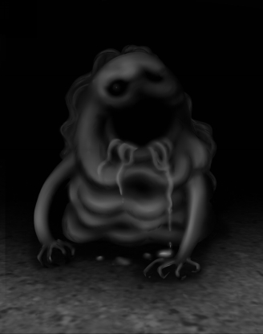

| 盗賊狩りの財宝迷宮 | |
| 神崎マコト | |
| (2018) | |
盗賊狩りの財宝迷宮
神崎マコト 作・絵
「さあ、愛すべきネグラレーナの紳士淑女諸君！ 世にも奇妙な怪物たちを見てみたくはないかね？ 想像してごらん、あるはずのものがなく、ないはずのものがあり、見たこともないように這い回り、聞いたこともない声で叫ぶ姿を。金貨2枚でご覧に入れよう、一生脳みそに食い込んで離れない、異形の連中を！」
最近ネグラレーナにやってきた見世物小屋の興行主は、禿げ頭をことさらにツヤめかせ、毎日こうして客寄せの口上をまくし立てている。見世物小屋などさして珍しくもないのだが、この禿げ親父の小屋はなぜかとても流行っていた。怖いもの見たさで金を払った見物人は、皆口々に同じことを言うのだ。あんなものは見たことがない、と。
夕闇と雑多な人ごみに紛れてその様子をうかがうのは、若き盗賊である君だ。それというのも、この見世物小屋について妙な噂を耳にしたためだ。
......
「例の見世物小屋を見てきたぜ。ああ、ちゃんと金は払ったさ、誰かさんからすった金でな」
君にそっと耳打ちしたのは、盗賊仲間「早スリのベック」だ。
「気味が悪いなんてもんじゃねえ、足がいっぱいあったり、目がいっぱいあったり、そうかと思うと頭がなくて腹の真ん中に顔があったり」
腹を指さし顔をしかめるベックにつられ、君も眉をひそめる。
「その中に『4つ顔の貴婦人』てのがいたんだが、その顔のひとつが『猫足のロミーナ』にそっくりなんだよ。いや、あれは絶対ロミーナだ」
猫足のロミーナは、ベックと同じく君の盗賊仲間だ。少し前に「ある迷宮に行く」と言い残して以来、行方が分からなくなっている。君はベックに、似た女なんて大勢いるだろうと言い返す。だがベックは首を振った。
「ロミーナは刺青をしてただろ。舌先に、十字架の刺青――そんな女、他に見たことあるか？」
君は口を引き結んだ。確かに、そんな女はロミーナだけだ。しかしなぜ彼女があんな見世物小屋にいるのだ。しかも怪物のように変わり果てた姿で......
「あいつ、ウップルハックの財宝迷宮に行くって言ってたよな。きっとそこでしくじって、捕まっちまったんだ。ウップルハックに関わるとロクなことにならねえって忠告したのに」
大商人ウップルハック、知らぬ者のないほど有名な、敏腕の大商人だ。金にあかせて世界中の宝を収集し、その宝を飾るための豪華な屋敷をいくつも持っている。だが盗賊仲間の間では、彼のもうひとつの顔の方が有名だ。
ウップルハックは、自分の財宝に群がる盗賊たちを捕らえ、口にするのもはばかるような残虐な行為で責めさいなむのが何より好きな、極めつけの変人なのだ。
ウップルハックの宝を狙って、凄惨なワナの餌食になった盗賊は数知れない。君の馴染みの盗賊も何人かが犠牲になっている。君自身もまた、ウップルハックの宝をめぐって死ぬより悲惨なワナに貶められた過去を持つ。その時のことを思い出すと、今でもはらわたが煮えくり返る！
「馴染みの情報屋から聞いたんだが、財宝迷宮から宝を持ち帰って大儲けしたって触れ回ってる連中がいるらしい。美味い話を匂わせて、俺たちを誘ってやがるに違いねえ。命あっての物種だ......お互い気を付けて行こうぜ」
ベックは背中を丸めながら去っていった。
その後姿を見送り、深くため息をつく。ロミーナは君にとって、信頼できる数少ない仲間のひとりだった。男女の枠を越えて「友」と呼べる存在だったのだ。彼女が財宝迷宮に挑むと意気込んでいた時、意地でも止めればよかった――ロミーナの行方を人知れず探していた君にとって、ベックがもたらした知らせはまさに最悪の結末だった。
ようこそ。刺激的で残酷な 『盗賊狩りの財宝迷宮』に目を付けた「君」を心から歓迎しよう。
君は闇に潜む名うての盗賊だ。盗みの技術はもちろん、短剣の扱いにも長けている。冒険の前に自身の実力を決め、探索のルールについて熟知しておこう。サイコロを用意し、原技術点と原体力点、原運点を決め、メモをしておくことをお勧めする。サイコロが手元にない時は、サイコロアプリ等を使うのもよいだろう。
とはいえ、各自の都合に合わせて探索してもらって構わない。無双状態でガンガン突き進みたい冒険者も多かろう。ただどちらにしても、アイテムを拾った時やヒントを得た時などは忘れないようメモしておくのが賢い冒険者の心得であることに変わりはない。
なお、各パラグラフの末尾にある「◇」は【各ページリンク表】にリンクされている。ヒントに基づいて、特に指示のない箇所からパラグラフジャンプする場合などに使用してほしい。
ルールをスキップ → 【1】へ
・原点数の設定
原技術点......サイコロを1つ振り、出た目に6を足した合計
原体力点......サイコロを2つ振り、出た目に12を足した合計
原運点......サイコロを1つ振り、出た目に6を足した合計
これらを忘れないようにメモしよう。数値は冒険の間に絶えず変化するので、増減の都度メモに記入しておくことが重要だ。ただし、原点数は決して忘れないこと。特別な場合を除き、原点数を越えてはならないからだ。
技術点は器用さや熟練度、体力点は文字通り体力と生命力を示し、運点も同じく運の強さを示している。これらの数字が高いほど、冒険には有利ということになる。
・戦闘のルール
冒険の途中で出会う敵と戦う手順は以下の通りだ。
(1)敵の攻撃力を決める......サイコロを2つ振り、出た目に敵の技術点を加える
(2)君の攻撃力を決める......サイコロを2つ振り、出た目に君の技術点を加える
(3)君の攻撃力が敵の攻撃力よりも上の場合 → 敵の体力点から2点引く
(4)敵の攻撃力が君の攻撃力よりも上の場合 → 君の体力点から2点引く
※もし攻撃力が双方同じ場合、互いの攻撃をかわしたことになるので、再度(1)からやり直す。
※敵に与えるダメージを増やしたり、または自分へのダメージを軽減したりするには、運を活用することもできる。後述「運だめしのルール」を参考にしよう。
(5)増減した数字をメモしながら、どちらかの体力点が0になるまで(1)～(4)を繰り返す。君の体力点が0になってしまったら、君は戦いに敗れ絶命したことを意味する。探索はそこで終わりだ。
・逃亡について
通常のゲームブックであれば、特別な指示がない限り戦闘中に逃亡することができるが、この財宝迷宮は敵と出会ったらどちらかが死ぬまで戦わなければならない。どの敵も侵入者を全力で迎え撃つよう命令されているためだ。腹をくくって戦闘に臨んでほしい！
・運だめしのルール
探索の途中や戦闘中など、状況を有利にするために「運だめし」をすることができる。ただし、吉ならともかく凶が出た場合、大抵は酷い目にあうので注意が必要だ。
「運だめしをせよ」と指示があったら、サイコロを2つ振ろう。出た目の合計が、今現在の君の運点と同じかそれ未満なら「吉」だ。反対に、出た目の合計が、その時の運点より上の場合は「凶」となる。
運だめしを1回するたびに、その時点での君の運点から1点消費するのでメモをしておくこと。運に頼れば頼るほど、自分の首を絞めることに直結するので、くれぐれも忘れないように。
戦闘の際に運だめしをするかどうかは、特に指示がなくても君自身が決めてよい。
敵に傷を負わせた時、ダメージを上乗せすべく運だめしをすることができる。「吉」と出れば重傷を負わせたことになり、体力点から2点余分に減らすことができる。つまり通常のダメージ2点と合わせ、4点を減らせるというわけだ。
ただし「凶」の場合、与えたダメージはかすり傷程度だったことになり、通常のダメージで2点減らせるところを、1点しか減らせないので注意すること。
そして君が傷を負った時、ダメージを最小限に抑えるべく運だめしをすることができる。「吉」と出れば通常よりダメージが浅かったことになり、通常のダメージで2点減らさなければならないところを、1点減らすだけですむ。
ただし「凶」の場合、君は深手を負ったことになり、体力点からさらに1点余分に減らさなければならない。つまり通常のダメージ2点に加算して、3点を減らさなければならないということだ。
いずれにしても、運だめしするたびに運点から1点ずつ引くことを忘れないように。
・技術点、体力点、運点の回復
基本的に技術点や体力点、運点は、原点数を越えて回復することはない。
技術点については、特別な武器を持った時などに変動する場合があるので、文中の指示に従うこと。
体力点は、戦闘やワナの攻略などで激しく変動することがあり、回復するには食料や薬を用いるが、持っていないと使えない（当たり前だ）。探索の途中で食料などを手に入れるまで、慎重に行動することが重要だ。
運点は、何か特別な幸運に見舞われた時、または特別な運の悪さを発揮してしまった時に変動するので、文中の指示に従うこと。
・装備
君は愛用の短剣を携え、盗賊にふさわしく動きやすい服装をしている。財宝迷宮に挑む時、装備の状態について記されているので、その記述を参考にしてほしい。
・探索のこつ
ゲームブックは番号順に読んでも意味が繋がらないようにできている。選択肢を選び、その番号の項目を読んで進めていこう。探索を有利にするアイテム、重要なヒントなどを集めながら、悪辣なワナのひしめく迷宮を攻略し、財宝を手に帰還できることを願ってやまない。
君に盗賊の神の加護があらんことを。
【1】へ進め。
夕闇が暗闇になろうという頃、間もなく見世物小屋の営業時間が終わる。盛況だった小屋の周辺もだいぶ人が減り、君はようやく動き出す。
古びた紅白の幕で作られた見世物小屋の入口には、小ずるそうな男が立っている。その横に「見物料、金貨2枚。払わないなら猛烈にもてなされること請け合い！」と書かれた札が下がっている。
小屋を閉める時間が近づいているせいか、入口の男はそわそわと落ち着かない。日銭稼ぎのこうした連中は、仕事が終わると同時に酒場か賭博場へ駆け込むのがお決まりだ。
君は正面から男に歩み寄り、声をかける。小屋を閉める間際に現れた君に、入口の男はあからさまに面倒くさそうな顔をする。
「お代は前払いだよ、金貨2枚だ」
ここで君は、
金を払って中へ入るなら【4】へ進め。
男に襲いかかるなら【7】へ進め。
中に忍び込む別の方法を探すなら【9】へ進め。
馴染みの情報屋へ行くなら【3】へ進め。
曲がりくねった裏通りを抜け、君はとある建物の中に入る。くたびれた外装に似合いの雑多な室内だが、居心地は悪くない。大股でカウンターに歩み寄ると、しわくちゃの老人がしかめっ面で出迎える。
「何だ、おまえさんかい。ご無沙汰だったから、どっかで野垂れ死んだと思ってたぜ。何の話が聞きてえか、このアゴンに言ってみな。ただし、どの話も金貨1枚。前払いだ」
悪態をつきながら手を差し出す老人、アゴン。毎度この憎まれ口を聞いている君は、もう慣れっこだ。
ここで君は彼に何をたずねる？ 情報料として金貨1枚を減らすのを忘れないこと。
見世物小屋についてたずねるなら【8】へ進め。
財宝迷宮について触れ回る連中のことを聞きたいなら【6】へ進め。
何か面白い話はないかとたずねるなら【5】へ進め。
もう十分話を聞いたなら、アゴンに別れを告げて見世物小屋へ向かえ。【2】へ進め。
君は入口の男に金貨2枚を支払う。所持金から金貨2枚を減らせ。
「終わりの鐘が鳴ったら、すぐ外へ出てくれよ」
適当に相づちを打ちながら、君は見世物小屋の入口を抜けて中へ進む。
色とりどりの飾りつけをした檻が並び、それらを順繰りに見物できるよう板切れで通路を作ってある。何度も使い回している汚い板に矢印が描かれ、その先にある最初の檻の前へやってきた。
よどんだ空気の中にたたずむ「それ」を見た途端、息がぐっと詰まる――床に転がる小太りの男の手足が、根元から、ない。
顔をしかめながら注意深く観察すると、切り落とされたような痕跡がなく、まるで「元からそうである」ようになめらかだ。汚物をまき散らしたまま転がっている様を見ると、家畜の方がまだましに思えるほど哀れだ。
ふと、男が君に気付いた。目を見開き、体を波打たせて必死に君へ這い寄ろうとする――大口を開け、気がふれたような声を上げながら。
君はすぐに気付いた。男は、舌を抜かれている！
男は汚れた顔を格子に擦り付け、首を振りながら涙目で吠え立てる。まるで、助けてくれと叫ぶかのように。だが君がしてやれることは何もない。君は檻から離れ、順路にそって歩き始める。
狭い順路をめぐりながら、君は終始寒気に見舞われていた。顔中に目のある者、体中から腕が生えた者......醜悪さを具現化したような怪物が、狭い檻の中で唸り声を上げている。そしてようやく「4つ顔の貴婦人」の檻の前にやってきた。
古びた椅子にだらしなく腰かける、裸の女――巨大な頭には、めちゃくちゃにくっついた女の顔が、4つ......
「ロミーナ......？」
君の声に、4つ顔のひとつが反応した。唇をもどかしく歪め、重すぎて動かせない頭をかすかに揺すり、それは叫ぶ。
「オォ......オオォォォォォ」
血の気が引く――やはり舌を抜かれている！
しかし君には分かった。目じりにある小さな傷、かつて一緒に仕事をした時に負傷した傷......ロミーナに間違いない。おぞましい姿に成り果てたかつての仲間を前に、君は言いようのない絶望感に押し潰されそうになる。
ロミーナは君に目配せし、小さく手を動かしていた。何かをつまみ、引き抜く動作を繰り返し、君に何かを伝えようとしている......
「おらおら、終わりの時間だよ！ 残りのお客は帰った帰った、早く帰らねえと、そいつらの檻に一緒に入れちまうよ！」
騒々しい鐘の音とともに、入口にいた男の声が響き渡った。
哀れな姿のロミーナを目に焼き付け、君は振り切るように小屋を後にする──抜かれた舌が意味するものを、頭の中で幾重にも巡らせながら。
財宝迷宮へ向かおう──【10】へ進め。
「面白い話、ねえ......」
アゴンは鼻をこする。
「ここだけの話だが、最近行方知れずの話をよく聞くな。俺の記憶にも残らねえようなクズどもから、馴染みの客まで幅広く、な......」
財宝迷宮のせいなのかとたずねる君に、アゴンは首を横に振る。
「関連があるかどうかまでは知らん。あの迷宮ができる以前から、そういう話はちらほら聞こえてたからな。旅に出ただけかもしれんし、とっ捕まって牢屋行きになったのかもしれん。だが、あの迷宮が噂になりだした辺りから、明らかに突然姿を消している連中が増えたのは確かだ。考えたくねえが、例の変態商人の餌食にされた可能性も否定できん」
アゴンは小声でつぶやく。
「裏で糸を引いてる奴がいるのは間違いねえ。案外俺たちの近くにいるのかもしれねえぜ」
盗賊稼業に裏切りは付き物だ。昨日の友が今日の敵になることなど珍しくもない。
「どんな時でも、どんな奴にも、簡単に気を許さねえこった――このアゴン以外はな」
【3】へ戻って次の行動を選択せよ。まだアゴンに聞きたいことがあるなら、話を聞くたびに金貨を1枚減らすのを忘れずに。
「例の財宝迷宮から生還したってふれ回ってる、羽振りのいいまぬけの話か」
アゴンは鼻で笑って頬杖をついた。
「どう見ても探索に縁のないクズがあちこちの酒場で自慢するもんだから、似たようなゲスが財宝迷宮にほいほい飛び込んでくっていうぜ。ウップルハックは大喜びだろうよ、楽しいおもちゃが自分から網にかかりにくるんだからな」
君が肩をすくめるのを見て、アゴンがにやりとする。
「あれはクズを煽るだけの客寄せ野郎さ。ということは、だ......そいつみてえに変態商人の息がかかった連中が、他にも当然いるってこった」
そこまで言って、アゴンは思い出したように指を鳴らす。
「そういや迷宮内に魔女がいるって噂を聞いたな。気位の高い魔女まで飼いならす変態野郎の手腕には毎度感心するぜ」
しかめっ面をさらに嫌そうに歪めるアゴン。
「女と思って甘く見ると、どえらいしっぺ返しを食うぞ。魔女だろうと何だろうと、女には近づかねえ方が身のためだ！」
【3】へ戻って次の行動を選択せよ。まだアゴンに聞きたいことがあるなら、話を聞くたびに金貨を1枚減らすのを忘れずに。
君はすり足で男へ近づくと、おもむろに短剣を振りかざして襲いかかる。短剣の切っ先が男の胸を貫こうとする寸前。君の一撃は弾力のある何かに弾かれた。
「ちっ、驚かせやがって......ダムダム、こいつを捕まえな！」
男は吐き捨てるように言い放ち、奥へ引っ込んで入口を閉ざす。
君の前には、奇妙な丸い塊が残されている。野犬程度の大きさのそれは薄汚れた肌色で、質感も人の皮膚そっくりだ。異様な姿に気を取られていると、不意にそれは大きく震え、次いで全体から触手めいた突起が飛び出した！ 軟体の塊――ダムダムの柔軟な突起が無数に伸び上り、君に襲いかかってくる。
最初こそ難なくかわしていたものの、弾力ある頑丈な突起がそのたびに増殖し君を翻弄する。次第に応戦しきれなくなり、ついに君は突起の群れに捕えられ、全身を締め上げられる。あまりに強い締めつけに、気が遠くなりそうだ！
半分失神しかけたまま、君は見世物小屋の裏手へ引きずられていく。入口にいた男がにやにやと笑いながら君を出迎える。
「てめえみてえなクズ野郎の処分は、俺たちに任されてんだ。へへへ、あんまり簡単におっ死んでくれるなよ」
男は手にしたビンを傾け、白くにごった液体を1滴、君の目に垂らした。
ジュッと焼け付く音と同時に、凄まじい激痛が襲う！ 強酸のしずくに焼かれ、君の眼は見る間に焼けただれ煮え立ち、崩れていく。眼窩で泡立つ肉の焼ける匂いにむせながら、君はただただ狂ったように絶叫し続けた。
「書いてあっただろ、猛烈にもてなしてやるってな......さあ、次はどこを焼いてほしいか言ってみな。返事がねえなら、てめえの縮み上がったモンにぶっかけてやってもいいんだぜ！」
男は君の返事を待たず、狂喜しながらビンを大きく傾けた――君は探索に出るまでもなく人生を終える。
さっそくこんなところで冒険を終えるとは早すぎやしないか？ 今すぐ【1】へ戻ってやり直せ。今度こそ、慎重に！
「あの見世物小屋か？ 妙な連中が勢ぞろいしてるってんで大はやりみてえだな」
アゴンは大きくうなずき、すぐに小声で続ける。
「あそこでさらし者になってる怪物は、もともと人間だったんじゃねえかって噂がある」
ベックから聞いた話が脳裏をよぎる――君の顔つきが変わったのを見て、アゴンはおどけたように眉を上げる。
「死体をつなぎ合わせるのと違って、生きたままくっつけちまうなんてのは、人の技じゃねえ。おめえが何を考えてるのか知らねえが、かなり厄介な相手なのは間違いねえぜ。気をつけな、連中の背後にはもっとでかい親玉がいる......もう分かってるんだろう？」
腕組みしている君へ向けて、アゴンは小さくため息をつく。
「このネグラレーナで、あんな大っぴらな金稼ぎをする連中だ。難癖つけてくるならず者への対策は万全なはずだ。何が出てくるか分からねえ、力で押し切ろうなんて馬鹿な真似だけはすんじゃねえぞ」
アゴンの忠告は的確だ。君は彼の顔に刻まれたシワを見ながら、小さくうなずく。
【3】へ戻って次の行動を選択せよ。まだアゴンに聞きたいことがあるなら、話を聞くたびに金貨を1枚減らすのを忘れずに。
君は足音を忍ばせ、小屋の周囲を調べて回る。ほかに中へ入れるような場所はないだろうか。薄汚い幕を揺らさないよう静かに歩いていると、奥の方から話し声が聞こえてきた。
「笑いが止まんねえな。こんな化け物どもで荒稼ぎできるとは思ってもみなかったぜ」
「親方、興業が終わったら、こいつらどうするんですかい？」
「例の旦那のとこへ連れてく手筈になってるさ。変態紳士淑女どもが存分にいたぶって楽しんだ後、家畜のエサにでもするんじゃねえか？」
大きな笑い声が上がる。
変態紳士淑女とくれば、出てくる「旦那」はひとりしかいない。
やはりウップルハックが一枚かんでいるのは間違いなさそうだ。君はむかむかしながらその場を離れる。去り際、金貨を1枚拾った。所持金に金貨1枚を加えよ。
残念だが、忍び込めそうな場所は見当たらなかった。さて、どうすべきか。
金を払って中へ入るなら【4】へ進め。
男に襲いかかるなら【7】へ進め。
馴染みの情報屋へ行くなら【3】へ進め。
財宝迷宮へ向かうには、ネグラレーナから南に向かい、ネメディ平原を抜けなければならない。ネメディ平原は悪名高い巨大イモムシ「ハリアー」が生息する危険地域だ。運よくハリアーに出会わずとも、他の巨大生物どもの餌食になる旅人は後を絶たない。
しかし君はハリアーへの畏怖よりも、大事な仲間を無残な姿でさらし者にしたウップルハックへの憎悪に燃えていた。あの胸クソ悪い変態野郎にひと泡ふかせるためなら、どんな危険な道中も越える自信があった。迷宮に眠るというウップルハックの「気に入りの宝」を手に入れて、あの薄ら笑いを凍り付かせてやるのだ。
『盗賊の流儀で、必ず復讐を果たす。見ててくれ、ロミーナ』
だが、何かまだ見落としているような、漠然とした不安があった。
見えない真実が裏に潜んでいるように思えてならない――こういう時の君の勘はよく当たる。が、躊躇している暇はない。君は黙々と歩き続けた。
そうしてネグラレーナを出て5日目の夕刻、君はようやく財宝迷宮の入口にたどり着く。ネメディ平原のはずれにある、古い遺跡。こんなへんぴな場所にある遺跡をわざわざ改装して財宝迷宮を作り上げたというから、金持ちのやることはえげつなくて笑えない。
5日の間、幸いと言っていいのかどうか、凶悪な巨大イモムシのハリアーに出くわすことはなかったが、その代わりジャイアントホッパーに見つかって半日以上逃げ回る羽目になった。逃げ惑う最中、金貨を入れた袋が破けて所持金を全部ばらまいた上、持ってきた食料も底をついた──君は今、「もっとも迷宮に挑むべきではない状態」だ！
しかし君は動じない。唯一の所持品である愛用の短剣を手に、緩やかに傾斜する通路を進み、いよいよ財宝迷宮の扉の前に立つ。装飾の施された立派な両開きの扉を、深呼吸しながらゆっくりと押し開く。
迷宮の中は思いのほか明るく、手入れが行き届いている。通路には等間隔にランプが吊ってあり、ところどころ消えてはいるが見通しはいい。人の出入りがあるせいか、古代遺跡にありがちな空気のよどみはない。湿度が高く壁にツタが這っていて、いかにも迷宮らしい雰囲気を醸し出している。
入口の扉を抜けてすぐの壁に、目立つ看板が掲げてあった。
『ようこそ、愛すべき盗人諸君。ここは私のいちばん気に入りの宝を収めた迷宮だ。それを見つけて、無事生還できるかな？ なおこの迷宮には、諸君らをもてなす様々な仕掛けをたくさん用意してある。胸躍る探索を存分に楽しんでくれたまえ――ウップルハック』
何て不愉快な言いぐさだろうか。ウップルハックは人を不快にさせる天才だ！
看板のあちこちに蹴り飛ばしたり殴りつけたりした跡がある。君も同様に看板を蹴りつけ、むかむかしながら通路を進んでいく。
しばらく行くと十字路が見えてくる。だが、何だか妙な状態だ。赤い敷石の床以外が深く地面に沈み込み、大穴が開いている！
赤い敷石を渡り穴の中を覗くと、3人の男が落ちていた。声をかけてみるが返事はなく、生死の判別はつかない。這い上がれるかどうかギリギリの深さだが、穴に降りてみたいか？
十字路の東には石の扉が見える。西には木の扉があり、毛皮のような塊がぶら下がっている。北にも扉があるように見えるが、少し遠くて今いる位置からはよく見えない。ここで君は、
穴へ降りてみるなら【11】へ進め。
十字路を北へ行くなら【12】へ進め。
東の扉へ向かうなら【13】へ進め。
西の扉へ向かうなら【14】へ進め。
かろうじて這い上がれるかどうかの深さに不安を覚えるが、君は意を決して穴の底へ降りてみる。
着地と同時に、周囲から妙な気配がする――足元が変に柔らかい。ギョッとして下を見ると、黄味がかったミミズのような細い虫が無数に絡まり、のたうっている。穴全体が虫の巣なのだ！
この細い虫、前にどこかで......記憶をたぐり、ようやく思い出す。そうだ、これはシビレミミズだ。体から揮発性の麻痺毒を放出し、自分より小さな虫を捕食する。通常は単体で生息するため、これほど大量のシビレミミズを見るのは君も初めてだ。
全身に鳥肌が立つが、這い登ってくるシビレミミズを振り落としながら、つとめて冷静に周囲を観察する。穴に落ちた3人の男たちはみな白目をむいて昏倒しており、虫が体を這い回ってもピクリともしない。シビレミミズは自分の口より大きい獲物を捕食することはないため、男たちをただの小山としか見ていないのだろう。
近くには、上質な造りの宝箱がある。開けてみると、中にはぎっしり「おがくず」が詰まっていた。誰かが必死に掻き出したのだろう、箱の周囲はおがくずだらけになっている。穴の底には他にも宝箱があり、いくつかは乱暴にひっくり返されている。
そこでふと考える。
この程度の穴に落ちた衝撃で、大の男が気絶するだろうか。おがくずが詰まった宝箱には、何か重要な意味があるのでは......
君は手近な男の持ち物を手早くまさぐる。金貨4枚と『火薬玉』を見つけた。必要なら所持品に加えてよい。次に君は、
ほかの男の持ち物を調べるなら【15】へ進め。
十字路を北へ行くなら【12】へ進め。
東の扉へ向かうなら【13】へ進め。
西の扉へ向かうなら【14】へ進め。
北に向かうと、やがて扉にたどり着く。目線の高さに小さなプレートが打ち付けてある。
『ご自由にどうぞ』
何のことかと思いながら扉を開けると、小さな宝箱が部屋中にあふれかえっている！ 空っぽの箱が大半だが、下の方に重なった箱はまだ開けていないものもある。部屋の壁には、また例の看板がかかっている。
『お近づきのしるしだ。好きなだけ持っていきたまえ！』
何がお近づきだ――手近な箱を何個か手に取ると、それぞれ違った模様が入っている。何か意味があるのだろうか。思わずごそごそと宝箱を漁る。何個かの宝箱を開けて金貨を7枚手に入れた。所持金に加算しておくこと。
これ以上できることはなさそうだが、まだ宝箱の山を漁りたいか？
ただし、この部屋に入るのが2度目以降で、すでに7枚の金貨を手に入れているなら、ここで手に入るものは何もない。速やかに移動せよ。
部屋の北側に扉がある。大げさなほど凝った天使の装飾を施した扉だ。この部屋を出て十字路に戻ることもできるが、ここで君は、
小さな宝箱をもう少し漁りたいなら【16】へ進め。
天使の扉を開けるなら【25】へ進め。
東の扉へ向かうなら【13】へ進め。
西の扉へ向かうなら【14】へ進め。
重い石の扉を開けると、部屋は薄暗く、妙に生臭い匂いがこもっている。
ただしこの部屋に入るのが2度目以降なら、ここにはもう何もない。速やかに部屋を出て探索へ戻ること。
危険な獣の巣に入った時の嫌な気配を感じ、身震いする。そしてそういう予感ほど、当たってしまうものだ――部屋の隅から音がして、人の頭ほどの塊が転がってきた。大小様々な種類の蛇がめちゃくちゃに絡まったまま転がってきて、それぞれの頭が君を威嚇する。
いや、よく見るとそれは絡まっているのではない。めちゃくちゃにくっついているのだ！
ゴルゴンボールは勢いよく転がってきて君の足に噛みつこうとする。慌てて避けると、別方向からも2つのゴルゴンボールが転がってきて仰天する。3つのゴルゴンボールをひとつの敵として戦え！
ゴルゴンボール 技術点6 体力点6
勝ったら、改めて部屋を調べてみる。
ミイラ化した死体が部屋の奥に横たわっている。散々噛みつかれたのだろう、死体も衣服も裂けてボロボロだ。隠しポケットの中に金貨3枚を見つけた。所持品に金貨3枚を加え、先を急ごう。
十字路を北へ行くなら【12】へ進め。
西の扉へ向かうなら【14】へ進め。
木の扉に近づいてようやく分かった。毛皮の塊は干からびた獣の死骸で、扉に逆さまに打ち付けられているのだ。干からびすぎた獣の恨みがましい眼窩を見ないよう、扉を開ける。
中はほの暗く、枯草の匂いがする。部屋の中央に台があり、両手に乗るくらいの小さな棺桶がある。君が感じた匂いは、この棺桶のそばに手向けられた花束の匂いだ。乾き切ってカサカサになっている。
わざわざこんな小さな棺桶を作るとは......半ば呆れながら棺桶を開けると、どす黒い小人のようなものが横たわっていて思わず飛び上がる！
苦悶の表情をした小人の死体――だが、どこか妙だ。全体的にツヤがあり、花束の匂いに紛れているが甘ったるい香りもする。手に取って見てみるか？
ただし、すでに小人の死体を調べたことがあるなら、ここでできることは何もない。速やかに移動せよ。
こんな気味の悪いものに触りたくないと思うなら、部屋を出て別の通路を選ぶこと。
小人の死体を手に取ってみるなら【17】へ進め。
十字路を北へ行くなら【12】へ進め。
東の扉へ向かうなら【13】へ進め。
君は虫を足先でかきわけ、別の男の荷物を漁る。おがくず入りの宝箱も気になるが、手荒にひっくり返されているのを見ると「何も見つからなかった腹いせ」だろう。
2人目の男は軽装で、ろくなものを持っていない。3人目の男の懐を調べると、ようやく巾着袋を見つけた。手触りからして金貨か宝石だろう。
開けようとした矢先、君はそれをぽろりと落としてしまう。自分自身に舌打ちし、巾着を拾おうとした君は目を見開く――指先の感覚が、ない！
一気に血の気が引いた君は、妙な声を上げながら身をひるがえす。だが君の意に反して体は動かなかった。瞬く間に全身がしびれて体勢を崩し、虫の波に倒れ込む。君は虫のうごめく穴の底で、まぬけな4人目の男になったのだ......
どれだけ気を失っていただろう。気が付くと、薄汚いローブを目深にかぶった連中に運ばれていくところだった。暗い通路を抜けて屋外に出ると、そこに待っていた馬車へ乱暴に放り込まれる。頭を打ってうめく君に気付くと、ローブの男が汚らしく黄ばんだ歯を剥き出してにやりとした。
「起きたか、まぬけ。シビレミミズの毒気をたっぷり吸い込んだんだ、しばらく動けやしねえよ」
君は愕然とする。シビレミミズは揮発性の麻痺毒を放出するが、本来人間のような大型の生き物を麻痺させる力はない。だが大量のシビレミミズを狭い空間に詰め込んだなら話は別だ――穴の中にたまった麻痺毒で、君はまんまとしびれてしまったのだ。
「迷宮探検が聞いて呆れらぁ。あんな場所で気絶してるようじゃあ、一生ウップルハックの旦那の宝は拝めやしねえよ。だが俺らはありがてえんだぜ？ 浅いところで倒れてくれる方が、回収の手間が省けるからな。ひひひひ」
穴の中にいた連中も一緒に連れてこられたらしく、悔しげなうめき声が漏れる。
「ウップルハックの旦那は、てめえら盗賊どもをパーティーに招待してえんだとさ。旦那主催のパーティーは豪勢だって聞くぜ......銀の鎖で縛り上げられ、ダイヤのナイフで体中をえぐられて、溶けた金をたっぷり飲ませてくれるってよ。てめえら盗賊にとっちゃ、嬉しすぎる死に様だろうが！」
こんなところでつまずくとは......君の冒険は、ウップルハックを喜ばせるもっとも不本意な形で終わりを迎えた。
このままで終われないと思うなら、今すぐ【10】へ戻りたまえ。次こそ、盗賊の神の加護があらんことを。
宝箱の山をひっくり返して探し続けるが、あれ以降で見つけたのは金貨1枚のみ。他にめぼしいものは見当たらない。あきらめかけた時、ふと手にした宝箱の中に小さな羊皮紙が入っていた。
『青い床は飛び越えろ。赤い宝箱は箱ごと持ち去れ』
小箱を裏返すと底面に十字架が描かれている。ヒントが入っている宝箱の目印なのだろうか。ともかく、金貨1枚を所持品に加えよ。
もしすでに羊皮紙を読み、金貨1枚を手に入れているなら、ここで手に入るものはない。速やかに移動せよ。
あまり時間をかけてもいられないが、宝箱の行方は気になる。追手や魔物がやってこないうちに、次の行動を決めよ。
十字架が描かれた小箱を探したいなら【18】へ進め。
北にある天使の扉を開けるなら【25】へ進め。
部屋を出て東の扉を開けるなら【13】へ進め。
部屋を出て西の扉を開けるなら【14】へ進め。
つくづく嫌な色合いをしているそれを、おそるおそるつまみ上げてみる。
ぷよぷよの柔らかさにビクつきながら匂いをかぐと、やはり甘い香りがする。弾力のある素材でできたそれは、見た目は本当に苦悶の果てに息絶えた小人の死体にしか見えない。
試しに、少しましな色合いの部位を――かなり度胸がいるが――ひと口かじってみる。
最悪な見た目にも関わらず、味は悪くない。悔しいが、うまい。やはりこれは、子供用の菓子だ。顔をしかめつつも、背に腹は代えられないので持っていくことにする。食べれば体力点が2点回復する『ゾンビグミ』を所持品に加えよ。
こんな悪趣味なものをわざわざ作るとは、やはりウップルハックは筋金入りの変人だ。
十字路を北へ向かうなら【12】へ進め。
東の扉へ向かうなら【13】へ進め。
十字架が描かれた宝箱を探して、宝箱の山をさらに奥まで引っ掻き回す。
それだけでも結構騒々しい上に、君は少し夢中になりすぎたようだ。天井から何かが染み出し、ゆっくりとしたたり落ちてくることにも気付かない。それは君の背後にゆっくりと落ち、ぬちゃりと神経に障る音を立てた。瞬時に猛烈な悪寒を感じ、君はその場から大きく飛び退く。
技術チェックをせよ。サイコロを2つ振り、出目の合計が君の技術点と同じか、それ以下なら、粘液まみれの触手が鋭く空を裂き、君の横っ面をギリギリでかすめていく。出目の合計が君の技術点よりも大きければ、汚らしい触手が君の顔面をとらえ、粘液まみれの触手で鼻と口がふさがれて息ができなくなる！ 必死に払いのける間に、ねばついた触手の一撃でみぞおちをえぐられ、君はひどくせき込む。体力点から2点差し引け。
見ると、泥水色の不潔そうな粘液がふるふると振動して不快な音を立てている。君を威嚇し、触手を次々と伸ばして臨戦態勢だ。戦うしかない！
ヘドロスライム 技術点5 体力点5
勝ったらすぐに移動しよう。このまま探したいのは山々だが、これ以上得体の知れないものに襲われたらたまったものではない！
北にある天使の扉を開けるなら【25】へ進め。
部屋を出て東の扉を開けるなら【13】へ進め。
部屋を出て西の扉を開けるなら【14】へ進め。
鎖にぶら下がったフックにロープを投げて引っかける。
「なかなかうまいな、うん。俺の次くらいにな」
コインの刺青が鮮やかに浮く首元を、ぼりぼりと掻きながらつぶやくシロップ。一発でロープをかけた君の腕前を目の当たりにして、どこか悔しそうだ。
「じゃあ、次の機会には俺よりうまいシロップのお手並みを拝見するかな」
「へっ、そん時になって吠え面かくなよな」
子供のようにふくれっ面をするシロップ。君は笑いながらロープをつかみ、悠々と水路を越えて向こう岸へ渡る。シロップが渡り終えてから、ロープを回収するのも忘れない。後から来るかもしれない同業者に親切な道具を残しておくほど、君はお人よしではない。
南の通路へ向かっているなら【28】へ進め。
北の通路へ向かっているなら【30】へ進め。
男は大の字になって事切れ、君はようやく肩の力を抜く。シロップがこそこそと出てきて、すまなそうに頭をかく。
「いやその、狭い部屋だから、俺が邪魔するのもアレだと思ってさ......おまえなら絶対勝つって信じてたしな」
つくづく調子のいいやつだ......君はため息をついてうなずき返すにとどめるが、本音は別のところにある――あの時、シロップがわざと男から隠れたように見えた。顔を見られたらまずいと言わんばかりに。
まさかとは思うが、あの男と顔見知りだったのだろうか？
君は周囲を見回す。部屋の中央にある台に、小さな棺桶が置かれた不気味な空間だ。
「さっきの口振りだと、こいつは迷宮の回収係なんだ。ワナにかかった連中を生死にかかわらず捕まえて、ウップルハックに届けてやがるんだ。この通路は、回収係が迷宮を行き来するための連絡通路に違いねえ」
さすが、盗賊をワナにはめるためのあらゆる工夫が施されているらしい。中央の台座の下に、男の背負い袋が置いてある。中を覗くと、奇妙な人形が出てきた。人形といっても単に人型をしているだけの、かなり雑な造りだ。手のひら大のそれは手触りがぶよぶよしていて、妙に生臭い。隙間を見ると、どうも生肉が仕込まれているようだ。人形の胸には木の杭が打ち込まれ、口と思しき部分には枯草と鳥の羽が縫い込まれている。
「何だこれ。呪いの人形か？」
「相棒、見ろよ」
男の背負い袋を漁っていたシロップが、中から羊皮紙を取り出した。開いてみると、汚い字が殴り書きされている。
『たしひきの女神に迫られたらこいつを投げつけろ。並の武器じゃ歯が立たねえぞ』
「なるほど、こいつはその『たしひきの女神』とかいうのをかわすための道具ってことか。そういうことなら持っていく価値はあるな」
所持品に『奇妙な人形』を加えて水路に戻り、北か南のどちらかへ進むこと。
北の通路へ向かうなら【30】へ進め。
南の通路へ向かうなら【28】へ進め。
しばらく歩いて、君たちは十字路に出くわした。
十字路の真ん中に細身の石像が立っている。足元に絡みつく罪人たちを蹴飛ばし踏みつけている、満面の笑顔の天使像だ。台座には「誰よりも正直な天使」と刻まれている。
「あの変態め、よっぽど地獄に堕ちたいらしいな。しかも無駄に出来がいいときたもんだ。ぶっ壊してやろうか」
シロップが顔をしかめて吐き捨てる。すでに誰かがぶっ壊そうとした跡が、天使像のそこかしこに残っている。こうなることを見越して頑丈な石像をこしらえたとしか思えない！
それはそうと、君は十字路を見回した。
東の通路は果てしなくまっすぐ続いている。西への通路は、先の方で南へ折れているようだ。ただ南の通路だけは、先の方で行き止まりになっている様子だ。北への通路は、見えづらいがかなり先で東へ折れているようだ。どこへ向かおうか。
東の通路を行くなら【44】へ進め。
西の通路を行くなら【49】へ進め。
南の通路を行くなら【85】へ進め。
北の通路を行くなら【31】へ進め。
君とシロップは渡り板の上で背中合わせになる。深い堀の底でうごめく走り玉を見ないようにしながら、板の先にある宝箱に意識を集中する。
「行くぞシロップ、1歩ずつ同時に進むんだ。いいな」
2人で声をかけ合い、慎重に足を踏み出す。渡り板が君たちの1歩で、軋みながらゆっくりと揺れる。
「あ、相棒......あの世ってさ、すっげえキレイなとこらしいぜ......」
「馬鹿野郎、まだ死ぬ予定はねえ！ いいから歩け、せーのっ」
ビクついて声が変になっているシロップに檄を飛ばすが、君も内心は冷汗ものだ。
見た目は頑丈な渡り板も、乗ってみると思った以上に頼りない。君とシロップは似たような背格好なので、渡り板が極端に傾くことはないが、宝箱のある板の端まで2人で進んだら、その重みで真ん中からぽっきり折れやしないかと不安になってくる。背後のシロップは確認できないが、情けない声が出ている時点で大体察しはつく。
慎重にそれぞれが渡り板の中ほどまできた、その時。
突然、堀の中の走り玉たちが跳ね上がり始めた！ 大男の咳払いのような吠え声を発し、細かい牙を打ち鳴らす走り玉の異常な跳躍力は、渡り板に届きそうな勢いだ。
「あ、相棒っ、どうすんだよ、俺たちこいつらに食われちまうよ！」
後ろからシロップの半泣きの声がする。
「落ち着けシロップ、大丈夫だ、届きゃしねえって......！」
そこまで言った次の瞬間、渡り板に数匹の走り玉がぶつかった。板が大きく揺れる！
『倒れずのコマ』を持っているなら【58】へ進め。
シロップに 『倒れずのコマ』を持たせたなら【101】へ進め。
『倒れずのコマ』を持っていないなら【39】へ進め。
君たちは行き止まりの壁の前にいる。この場所だけランプが低い位置にあり、目の前の壁がよく見える。壁には磨かれた銅板が張り付けられ、小さな棚に0から9までの数字のコマが並んでいる。その下にはさらに2つの穴が開いている。コマのひとつを手に取って見てみると、裏には複雑な形の溝が刻まれている。カギのような役割があるのだろう。銅板には文字が書いてある。
『私の告白は見つけられたかね？ 喜んで読んでくれたと確信しているよ。
4つの告白にはそれぞれ数字が隠れている。正しい数字を足すと、頼もしい助言者のもとへの道が開かれる。健闘を祈るよ――ウップルハック』
「なーにが健闘を祈るだよ、まったく」
シロップが壁を蹴り飛ばすのを横目に、君は考え込む。
君はこれまで【ウップルハックの告白】を読んだことがあるだろうか。そしてそこに書かれていた内容に、数字が入っていたのを覚えているか？
『正しい数字』を足し、導き出された数の項目へ進め。正解なら物語のつじつまが合うようになっている。もしまったく見当違いの項目へ飛んでしまったら、ここへ戻ってやり直してよい。このページの番号を覚え、【各ページリンク表】へ移動せよ。
この場を離れるなら三叉路へ戻れ。【33】へ進め。
渡り板にしがみつくシロップへ、君は声を張り上げる。
「落ち着けシロップ、しっかり狙って蹴り落とせ！」
シロップは痛みに顔を歪めながら、足に噛みつく走り玉を何度も蹴りつけた。やっと走り玉は口を離し、堀の中へぽちゃんと落ちる。シロップはようやく渡り板の上に這い上がることができた。
「あいてて、スネを思いっ切りかじりやがった！ あの玉っころめ！」
「噛みちぎられなかっただけましだろ。それだけ文句が言えりゃ大丈夫だ、さっさと宝を取っちまおうぜ」
君たちはじりじりと渡り板の端に移動し、ようやく小さな宝箱をつかんだ。
「取った！」
「俺もだ、相棒！」
戻るとなると君たちは素早かった。渡り板をすり足で移動し、中央の通路に飛び移る！
互いの健闘をたたえながら宝箱を開けると、君の宝箱には『エメラルドのナイフ』が入っていた。素晴らしい輝きに思わずため息がもれる。
シロップの宝箱には『干し肉』が入っていた。ネグラレーナの汚い露天商が売るような安物ではない、いい肉を使って贅沢に仕上げた逸品だ。食べれば体力点を3点回復できる。2食分あるので、シロップと半分ずつ分けることにする。
シロップは腹が減ったと言って干し肉をもりもり平らげてしまう。君も今食べたいならそうしてもいい。食べずにおくなら所持品に『干し肉』を加えておくこと。
「相棒、エメラルドのナイフは後で山分けだぞ。忘れんなよ」
君は苦笑しながらうなずいた。所持品に『エメラルドのナイフ』を加え（もし短剣を失くしているなら、エメラルドのナイフを装備してもよい。通常の短剣と同じように使うことができる）、南北の扉から先へ進め。
南の扉から外へ出るなら【98】へ進め。
北の扉から外へ出るなら【21】へ進め。
北へ伸びる暗い通路を進んでいくと、壁に蜂の巣のような穴が開いている。人ひとり入れるくらいの穴が無数に開いていて、いくつか格子がはまっている。格子のない穴を覗くと、奥の方に大きな宝石が見える！ 思わず手を伸ばそうとした時、ふと格子のはまっている穴にも目がいく――誰かの足先が見え、息を飲む。生きているのか、それとも......
「そこに誰かいるのか？」
不意に呼びかけられて飛び上がる！
声の方に目をやると、奥の穴から足首だけが出ているのに気付いた。格子が足首に落ち、挟まってしまったようだ。
「穴には絶対入るなよ！ その宝石はまぼろしだ。そいつに目がくらんで穴に入ったらこのザマさ。頼むよ、助けてくれ。礼は必ずするからさ」
何だか調子のいい声だ。見捨てるわけにもいかず、君は格子を取り外して男を引っ張り出してやる。君と同じくらいの背格好をした赤茶色の髪の男が這い出てきて、肩と首を鳴らしながら大きく伸びをする。
「やれやれ、助かったぜ相棒。そこの先客みてえに、穴にはまったまま死ぬ運命かとあきらめてたんだ。まだまだ俺の悪運も捨てたもんじゃねえな。俺はシロップ、気ままな一匹狼の盗賊だ。よろしくな」
首筋に彫られたコインの刺青が目を引く。シロップはにこやかに君へ笑いかけ、星の彫刻がある黒曜石のコインを投げてよこす。
「そいつをやるよ、助けてくれた礼だ。キレイだろ？ ここで何枚か見つけたんだよ」
『星のコイン』を手に入れた。所持品に加えておくこと。君はシロップの一挙手一投足を逃さず見据え、警戒する。
「シロップねえ......ずいぶん甘ったるい名前なんだな」
「おっと、みなしごの俺を拾ってくれたパン屋の親父の悪口は勘弁してくれ。大丈夫だ、名前は甘いが、仕事はそれなりにやる男だからな」
「それなりにやる男がワナにかかってちゃ世話ねえだろ」
「そう言うなって、たまたまだよ。なあ、これも何かの縁だ、一緒に探索しようぜ。2人の方が生き残る確率が高い、そうだろ？ 悪知恵を出し合えば、絶対ウップルハックの財宝を手に入れられるぜ」
ずいぶん人懐こい男だ。君は何度か断るが、シロップはまったく食い下がる気配がない。そのまま何となく押し切られ、結局君とシロップは一緒に歩き出していた。
「俺についてきたって面白くねえぞ。足手まといになるようなら置いてくからな」
「分かってる分かってる、任しとけ相棒」
本当に分かっているのか疑問だ......君はため息をつき、通路を進む。
やがて下り階段が現れ、水音が聞こえてきた。急な階段は途中から南向きになり、君たちは足音を忍ばせて降りていく。
階段を降りて数歩進むと、突然君たちの背後に鉄格子が落ちた。ふさがれた階段を見て、君とシロップは目を見合わせる。退路を、断たれた。
「後戻りはできねえ。行こうぜ、相棒」
さらに水音は強くなり、やがて行く手に水路が現れた。【30】へ進め。
通路は南北に伸びる一本道で、延々と続いている。ランプの明かりが弱く、余計に圧迫感を感じる。ふと、君たちは同時に顔を上げて周囲を見回した。
「聞こえたか？」
「ああ、何かの鳴き声だ。猫かな」
鳴き声はその一度きりだった。通路は再び静けさに包まれる。
「なあ相棒。おまえ、何でこんなとこに来たんだ。財宝目当てか？」
シロップが君の後ろでつぶやいた。
「......ウップルハックのクソ野郎には借りがある。仲間が何人も犠牲になったし、俺自身も酷え目にあった。奴の『気に入りの宝』を奪って、吠え面かかせてやるためさ」
「なるほど。借り......ねえ」
シロップはそこで言葉を切った。おまえはどうなんだと君も聞いてみる。
「俺の目当てはお宝だけだ。それ以上も、以下もねえ」
笑ってはいないが、どこか自嘲気味なシロップの言葉が、暗い壁に吸い込まれて消えていく。何か隠しているのだろうか――君たちはさらにまっすぐ通路を進んでいく。
北へ歩いていくなら【33】へ進め。
南へ進んでいくなら【78】へ進め。
「ちぇ、とんだ貧乏クジだよな......いいか相棒、絶対にロープを離すんじゃねえぞ！」
「分かってるって、頑張れよ」
散々話し合うも決着がつかず、結局コインを投げて賭けをした君たち。見事君は勝利し、シロップが穴に入ることになった。ぶつくさ文句を言いながら、胴体にロープを巻いたシロップは穴に這い進んでいく。
ごそごそと進む音が聞こえなくなり、ロープだけがじりじりと穴に飲み込まれていく。不安げに見守っていると、突然悲鳴が聞こえた。
「相棒っ、ロープ！ ロープを引いてくれ、早く！」
切羽詰まったシロップの声に、君は慌ててロープを引っ張る。ようやくシロップを穴から引きずり出すと、シロップは床に大の字になって大きく喘いだ。
「おいおい、穴の中にお宝なんかなかったぜ......その代わり、気色悪いらせん蟲が押し寄せてきやがったんだ。あと少し遅かったら蟲どもに骨までかじられてたとこだ」
お宝はこちら、なんて見え透いた看板に、いっぱい食わされたようだ。シロップに巻いたロープを回収し、所持品に戻しておくこと。君は文句を言いっぱなしのシロップを適当になだめながら、南にある扉から部屋を出ることにする。【46】へ進め。
君たちは水路の南側に立っている。
水路をはさんだ北側には鉄柵で塞がれた階段が見え、その手前には扉がある。
水路は、深さはないがかなりの幅があり、とても飛び越せる距離ではない。ゴミが多い上にドブ臭く、怪しげな藻が生えていて気味が悪い。幸い水かさは膝下程度と浅いため、歩いて渡ることはできそうだ。ただ、君のブーツは足首までの短いものなので、嫌でも水に浸かってしまう。
水路の上には鎖にぶら下がったフックがあり、ロープをかけて渡れそうだ。
南の通路は、見る限りまっすぐに奥へと続いている。
ロープを持っていて、使ってみるなら【19】へ進め。
水路を降り、水の中を歩くなら【53】へ進め。
絹鳥のブーツを持っていて、はいてみるなら【88】へ進め。
南の通路へ向かうなら【31】へ進め。
君は短剣を取り出し、ずた袋を鋭く一閃する。
横一文字に切り裂かれた袋から、茶色の液体がどっと流れ出た。君たちは大きく飛び退って液体から離れ、それを見守る。
「おい相棒......『中身』が見える......」
シロップの震える声の先を、君も凝視する。めくれた袋の奥に、恐ろしげな男の顔が見えた！
液体が出尽くした頃合いを見計らい、さらにずた袋を切り開くと、逆さ吊りにされた男の死体が出てきたではないか。全身の皮膚がひどくただれ、先ほど流れ出た茶色の液体が、口や髪から細く滴り落ちてくる。確かに「生き物」は入っていなかったが、こんなおぞましいものが入っているとは......
「この匂い、使い回して汚れた油じゃねえか......むごいことしやがる」
男を生きたまま袋に入れ、熱した油を注ぎこんで全身を「揚げ」ながら溺死させたのだろう。どれほどの苦痛だったか、この苦悶の表情を見れば容易に想像できる。通路に吊るしたのは、後続の侵入者――つまり、君たちへの見せしめに他ならない。
君はロープを切り、哀れな遺体を床に下ろす。汚れた油にまみれ、半ば「火が通った」状態の骸を前に、君たちはしばし無言になる。
この油まみれの遺体を調べるか？
その前に、君は【手袋】、または【ヤスリトカゲの革手袋】を持っているだろうか。
手袋があるなら、遺体を調べる際に手を汚さずにすむ。ただし油が染み込んで使い物にならなくなるので、所持品から手袋を消すのを忘れないように。
ヤスリトカゲの革手袋を使う場合は、丈夫な代物なので捨てる必要はない。ただし「油で汚れた」ことを忘れずに書き留めよ。
手袋がないなら素手で調べることになるので、嫌でも手は油で汚れることになる。また、手袋を持っていても油で汚したくないのなら、素手で調べるのはかまわない。
さて、どうする？
油まみれの遺体を調べるなら【106】へ進め。
遺体には触れず西へ向かうなら【21】へ進め。
遺体に構わず東へ向かうなら【81】へ進め。
君たちは水路の前に立っている。
水路を挟んだ南側に通路が伸びているのが見える。北の階段は鉄柵で塞がれ、進むことはできない。水路の手前には扉があり、「商い中」と書かれた札が下がっている。
水路は、深さはないがかなりの幅があり、とても飛び越せる距離ではない。ゴミが多い上にドブ臭く、怪しげな藻が生えていて気味が悪い。幸い水かさは膝下程度と浅いので、歩いて渡ることができそうだ。ただ、君のブーツは足首までの短いものなので、嫌でも水に浸かってしまう。
水路の上には鎖にぶら下がったフックがあり、ロープをかけて渡れそうだ。
ロープを持っていて、使ってみるなら【19】へ進め。
水路に降り、水の中を歩くなら【53】へ進め。
絹鳥のブーツを持っていて、はいてみるなら【88】へ進め。
札の下がった扉を開けるなら【57】へ進め。
暗い通路を歩いていくと、やがて扉のない部屋にたどりついた。隅にあるランプが照らす部屋の壁や天井を、何種類ものツタが覆い尽くしている。これだけのツタが生えているということは、出口が近いのかもしれない。そう思うと、鬱蒼とした不気味なツタも希望のしるしに見えてくる。
ランプの近くに、しま模様の実がひとつ実っているのに気付いた。独特のしま模様をした実は苦味が強く食用にはならないが、しぼり汁に強力な止血効果がある『血止めの実』だ。しかし実を取るには、天井付近までツタを登らなければならない。ここで君は、
血止めの実を取るなら【94】へ進め。
無視して先を急ぐなら【77】へ進め。
もし君がシロップと一緒なら、【各ページリンク表】から指定の項目へ進め。
「おい相棒、本気かよ！ マジでやめとけって、そんな色、絶対毒入りに決まってる！」
「大丈夫だ、俺はこれに賭けてみる！」
十字架の前に置かれた台に乗り、呼吸を整えた後、深紅のクリームパイをひと口頬張る。
木苺のような酸味と甘み、軽く鼻に抜けていく上品なスパイスの香り......腐りかけの生肉のような生臭さを想像していた君は、少々拍子抜けだ。舌に絡まる濃厚な味わいに、君は自分の選択が正しかったと確信を持つ。
「......早く吐き出せ、飲み込むなッ！」
不意にシロップが語気を荒げて叫ぶ。しかし君はその言葉より早く、パイを飲み込んでしまっていた。目を見開き落胆するシロップの顔に、何を慌てているのかとたずねようとした時。
喉の奥が猛烈に熱くなる。焼けた石炭を押し込まれたような激痛に、君は体を折り曲げて絶叫する。悲鳴と一緒に血反吐を吐き散らしながら、君は気付く――喉から腹までが、泡立ち溶け始めているではないか！ 自身から立ち上る臭い煙、ぐずぐずと溶けていく体。君はどうすることもできずに、ただ七転八倒し、溶けた喉から声なき絶叫を上げ続けるだけだ。
そんな君の背後にシロップがそっと立つ。無表情な中に悲しげな影を落としたシロップは、ぽつりと小さくつぶやいた。
「だからやめとけって言ったんだ......あばよ、相棒」
ハッとしてシロップを見上げた君の視界は血煙で塞がれ、次には一気に暗闇へ吸い込まれる。深く切り裂かれた喉は、吹き上がる血の中で見る間に溶け落ちていく――君の上半身はほどなく、骨まで溶けて消えるだろう。
シロップは苦しむ君を楽にしてくれたのだ......まるでこうなることを知っていたかのような彼の言葉に、もう疑問を投げかけることはかなわない。君は壮絶な最期を遂げた。
こんなところで冒険を終えるのは不本意だと思うなら、【31】へ戻ってやり直してよい。小さな賢者には、出会えたかね？
「やっぱり、何か匂うと思ったんだ。それを譲っておくれ、大事な話を教えるから」
賢者猫は喉をごろごろ鳴らして懇願してくる。君は緋色のサイコロを檻の中に入れてやる。
「ああ、思った通りいい品だ。これは赤龍のうろこを重ね合わせて作ったサイコロだ。龍の力があれば、私の魔力を何倍にも増幅できる。やっと退屈な迷宮から抜け出せるよ！」
賢者猫は嬉しそうにつぶやくと、サイコロをもぐもぐと飲み込んでしまった！ 緋色のサイコロを所持品から消しておくこと。
「お礼に君たちを待つ未来のひとつを教えるよ――耳かっぽじってよぉく聞きやがれ」
また口が悪くなった！
「俺には見える......いいか、『真ん中』のパイを食べた後、『多い』パイを持っていけ。我慢できないほど腹が痛くなった時、そいつをひと口だけ食べるんだ。ただし、食ってもくたばらねえ程度の体力は残しとけよ。そのせいで1人が死ねば、結局2人仲良くおっ死ぬことになるからな。たとえこの先何があっても、おまえらは迷宮を出るまで離れねえこった」
賢者猫は君に向け、素早く爪を出し入れして印を切る。手の甲が熱くなり、猫の目の印が浮かび上がった！
「忘れないように目印をつけておくからね」
刺青でも墨でもない、黄緑色の美しい模様に、ただ感動するばかりだ――「猫目の印」を手の甲に刻んだことを書き留めておくように。
そしてこれも重要な話だ。
この先の探索で、「襲いくる腹痛はもはや耐え難い」という言葉が出た時、「21」を足した項目へ進め。忘れないように書き留めておくこと。
賢者猫はちらりとシロップを流し見る。
「君たちの宿敵ウップルハックは、いかにも真実のようにして嘘をつく天才だ。彼の『気に入りの宝』が何か、もう目星はついたかい？ でも、多分それは見当違いだ。彼にとって金銀財宝は見慣れた日用品にすぎない。彼の宝は、君たちの近くにある......彼を心底わくわくさせるもの、君たちにとっては最悪の、恐怖の種がね」
どくろのブラシを持っているなら【79】へ進め。
話を聞き終えたなら部屋を出よう。【26】へ進め。
椅子に近づく君に、シロップが呼びかける。
「おいおい相棒、それに座る気か？」
「せっかく見つけたんだぜ、せめて座った感触くらい覚えておきてえじゃねえか」
君が肘かけに手を置く間際、シロップはさらにつぶやく。
「持って帰れねえからこそ......やめた方がいいと思うがな」
「意外と心配性だな、大丈夫だって。ただの椅子だろ？」
君はシロップの忠告をものともせず、椅子にどっかと腰を下ろす。ひんやりした大理石の感触が伝わってくる――と思ったが、なぜか温かい。しかも、柔らかい。この感じはまるで「生き物」ではないか......
そう思った瞬間、天使の椅子はぐにゃりと歪んで君を包み込んだ。大理石模様をした数十本の触手が君に絡みついて締め上げ、猛毒の棘を執拗に打ち込んでくる。呼吸困難を起こし、体中の血が逆流するような凄まじい激痛に、声なき悲鳴を上げる。
そんな君の最期を、シロップはただじっと見つめている。無表情の中に、ほんの少しだけ悲しげな影を落として。
「よく考えろよ相棒......狭くて持って帰れないってことは、だ。『本物の椅子』なら、ここに置くこともできなかったはずだ......言ったろ、やめておけって」
シロップの小さなつぶやきが届く前に、天使の椅子は君を大きく包み込み頬張った。そのままぐじゅぐじゅと噛み砕かれながら、君は文字通り天使のもとへ――悪魔の足元かもしれないが――旅立つことになった。
椅子から吐き出される、白い粉。これはすべて、椅子にしゃぶりつくされた犠牲者の骨だ。君の白い骨の粉が新たに床へ降り積もり、君の探索は終わりを迎える。
あの世に腰を落ち着けるのはまだ早いと思うなら、【31】へ戻ってやり直すことができる。今度こそ、うっかり死ぬことがないように！
固焼きパン 金貨4枚 ......保存のきく食料。食べると体力点を3点回復できる
ロープ 金貨5枚 ......丁寧に作られた丈夫なロープ。十分な長さがあり使い勝手がよさそうだ
手袋 金貨6枚 ......手首までを覆う革手袋。質の良い革で作られていて、柔らかく手になじむ
倒れずのコマ 金貨8枚 ......不思議な魔法の品。持っているだけで、どんな不安定な場所でもバランスを保つことができる
どくろのブラシ 金貨10枚 ......骸骨を握りつぶしたような形の、骨で作られた不気味な品。ブラシ部分が鋭く尖った骨でできていて、髪をとかす以前に頭皮が削げ落ちる危険がある！
「普通の品ばかりだって？ 分かってないねえ。こういうものを売って商売になるってことがどういう意味を持つか、よく考えるがいいよ。そうさね、ロープぐらいは持っておくのが盗賊のたしなみだと思うけどね。ああ、どくろのブラシはお土産用さ。財宝迷宮探索記念に、おひとつどうだい？」
マーベラの助言を聞くかどうかは君次第だ。【57】へ戻って買い物を続けよ。
板が大きく揺れてよろめき、君は姿勢を崩して足を踏み外す！
深い堀へ落下する寸前、君はかろうじて渡り板にしがみつき、何とか落下を免れる。板の反対側を見てみると、何とシロップも君同様に足を踏み外し、板にしがみついているではないか！
「何だよシロップ、俺たち気が合うじゃねえか！」
「アホか！ こんなとこで心中なんてごめんだぜ！」
君たちは声を張り上げながら、必死に板の上へ這い上がろうとする。その間にも、勢いよく飛び上がってくる走り玉がガチガチと牙を鳴らして君の体をかすめていく。揺れる板の上に上がるのはひと苦労だ。体力点から2点差し引け。
「うわああああ！」
ようやく這い上がった君は、悲鳴を上げたシロップに振り返る。板にしがみつくシロップの足に、走り玉が1匹噛みついているではないか！
シロップは足をばたつかせて走り玉を蹴り落とそうとするが、慌てているせいか、なかなかうまくいかない。早くしないとシロップの足の肉が噛み千切られてしまう。揺れる足場に這い上がり、何か投げるものはないかと自身を探るが、今すぐ投げられるものはこれだけだ――鞘に収めた愛用の短剣――これを投げれば、無論武器をなくしてしまう。決断を迫られている。
もし『ダイヤのナイフ』しか持っていない場合、投げつけるとシロップが怪我をする恐れがあるため投げることはできない。
短剣を走り玉に投げつけるなら【61】へ進め。
シロップを励まし成り行きを見守るなら【24】へ進め。
「相棒、考え直せよ！ 絶対にやめた方がいいって、そんな臭そうな色がまともなわけないだろ！」
確かに、食べ物の色とは思えない絶妙に下品な色合いだが......
「俺を信じろ、絶対これで間違いねえ！」
十字架の前に置かれた大仰な台に乗り、呼吸を整えた後、茶色のクリームパイをひと口頬張る。肥だめ魔神に弟子入りしたつもりでかじりついた君だったが、思わず声が出る――美味い！
「ちょ、おい......相棒、ひと口だけにしとけって！」
クリームの中に具材がたっぷり詰まっていて、濃厚なソースをかけたミートパイのようだ。シロップの言葉も、最悪な色加減のことも忘れ、君はパイをぺろりと平らげてしまう。
「......知らねえぞ、どうなっても」
眉をひそめたシロップがつぶやく。美味いものを食えなかった負け惜しみかと苦笑しかけた君は、急に猛烈な吐き気に見舞われる。あれほど美味だったのに、なぜ？
嘔気はどんどんひどくなり、ついに君はこらえ切れずに吐き戻してしまう。体が震えるほどの激痛が全身を駆け巡り、強いめまいに襲われて床にへたり込む。その間もげえげえと吐き続け、胃の中が空っぽになってしまう。これで楽になるかと思ったのもつかの間、一際強烈な嘔気がこみ上げ、君は勢いよく「何か」を吐き出した。
十字架の下に落ちたのは、肉片――君は真っ青になって口を押える！ が、もはや止めることはできなかった。口から勝手に飛び出してくる大量の内臓が、十字架の周囲をおぞましい深紅に染め上げる。そして最後に心臓を吐き出し、君は白目を剥いて絶命する。
「ひと口だけにしておけば、まだ助かったものを......だからやめとけって言ったのに」
無表情の中に少しだけ悲しげな影を落としたシロップのつぶやきは、君の耳に届くことはない。君の探索は失敗に終わった。
君の内臓は空っぽになったが、やり直す気概が残っているなら【31】へ戻るといい。次の探索では、勢いで死ぬことがないように！
壁のくぼみに数字のコマをふたつ、ぐっと押し込む。
すると、そこから遠くない場所で音が聞こえた。君とシロップは三叉路を南へ曲がり、まっすぐ続く通路を進む。すると途中の壁に、以前はなかった狭い通路ができていた。
東の壁にできた狭い通路を慎重に進んでいくと、小さな部屋にたどりつく。
部屋の中央には大きな鳥かごのような檻と、その中に寝転がる毛の長い大きな猫が1匹。宝石のような緑色の瞳に、見たこともない黄金色の毛色がとても美しい。君たちが猫に見とれている間に、猫は顔を上げてあくびをしながら、ひと言。
「ごきげんよう、私の友人たち」
君とシロップは仰天し、思わずその場から飛び退く！
「しゃ、しゃべった！ 猫がしゃべった！」
慌てて裏声になるシロップに、猫はおかしそうに言い返す。
「そりゃあしゃべるとも。私をここに閉じ込めた忌々しいウップルハック以外は、私の親愛なる友人だからね」
なるほど、ウップルハックは種族を越えてはた迷惑な存在というわけだ！
「私は賢者猫。放浪の大賢者ケパロの愛弟子にして大親友。私は何でも見えるし、知っている。君たちに必要な助言もね。よく聞くんだよ......こほん」
賢者猫はしとやかに座り直し、ふさふさの尻尾を振って、唐突に声を張り上げた。
「もっと美味いパイを焼きやがれって、ド下手の菓子職人のケツを蹴飛ばしな！ 唯一許せるのは『真ん中』のパイだけだ。それより少ないと舌も何もかも焼け落ちて、それより多いと体の中身が全部出ちまう。大事なのは色、読み方を変えるんだ。ラム酒漬けの脳みそに知恵が残ってるなら、そいつを全力で振り絞ってよぉく考えやがれ！」
君とシロップは唖然とする――助言の時だけやたらと口が悪い！ 賢者猫はさらにつぶやく。
「ふむ。君たちの未来のひとつが、あのウップルハックを歯噛みして悔しがらせているのが見える。そういうことなら、これをあげよう」
賢者猫はふさふさの毛の中から、美しい猫目石の護符を取り出した。
「これは『まどわしの護符』、見た目を変えるくらい朝飯前さ。こいつを欲しがる女は星の数だよ。試しに誰かに見せつけてごらん、目の色変えて飛びつくはずさ。これを身に着けている女には手を出さないことだね......まあ、すぐに分かるだろうけど」
護符を欲しがりそうな「女」に心当たりはあるか？ もしあるなら、その人物と会える場所で「8」を足した項目へ進め。忘れないように書き留め、所持品に『まどわしの護符』を加えておくこと。
ところで君は以下の品を持っているか？ 持っていなければ賢者猫に礼を言って部屋を出ること。
どくろのブラシを持っているなら【79】へ進め。
緋色のサイコロを持っているなら【35】へ進め。
部屋を出て通路に戻るなら【26】へ進め。
一瞬だった。
普通よりなめらかに作られているはずの回廊で、君は派手につまずき転倒する。慌てて起き上がるが、それよりも早く黒い影が視界の先を真っ二つに切り裂いた。
「あ」
言葉は、それしか出なかった。
不自然な体勢のところに落ちてきた刃が、君の左耳から尻までを一気に両断する。
派手に吹き上がる血しぶきの中、痛みも感じずに茫然となる君は、ゆっくりと振り返る。
「相棒......！」
汗だくのシロップが、悲壮な顔で君を見つめている。君は彼に手を振ろうとしたが、体がぐにゃりと折れ曲がり、ふたつにずれ落ちながら回廊に沈む。意識も一緒に両断され、君は静かに絶命する。
シロップはその場にへたり込み、押し黙ったままで深くうなだれる。
しかしやがて振り切るように立ち上がると、壁の一部を何事か操作する。ギロチン回廊の床が開き、真っ二つの君の死体が暗闇に吸い込まれていった。長い刃もまた天井へと吊り上がって元通りに収まり、回廊に残る血の跡だけが君の最期を物語る。
シロップはその一部始終を見守り、沈痛な面持ちで回廊に背を向けた。
「おまえだけには、走り切ってほしかった......じゃあな、相棒......」
小さなつぶやきを残し、シロップは扉を閉ざす。君の挑戦は失敗に終わった。
壮絶な死に様を迎えてしまったが、君にまだリベンジへの熱意が残っているのなら【31】へ戻ってやり直してよい。次こそ、幸運があらんことを。
暗い通路を進んでいくと、道の先が暗闇に覆われている場所に行きつく。
通路を照らすランプが消え、先が真っ暗になっているのだ。奥に見える灯りの場所まで、しばらく暗い中を歩かなければならない。ひょっとしたら、わざと明かりを落とし意図的に暗くしている可能性もある。
「何ともねえよ相棒、いきなり通路に穴が開いてるってんなら別だがな」
さりげなく嫌なことを言うシロップの頭を軽く小突き、君は通路を見つめる。遠くに灯りがあるおかげで、通路上に障害物がないことだけは把握できるが、他の危険については判断しにくい。
「ずいぶん慎重だな。警戒しなくても何もねえって」
「じゃあシロップが先に行けよ。俺は後からついてく」
「あっ、いや、俺は背後の敵に目を光らせなきゃなんねえから、先陣を切る役目は相棒、おまえに任せる！ 頼んだぜ！」
まったくもって調子のいいやつだ。
君はそろそろと壁伝いに暗闇を進んでいく。いちばん暗い中央付近に来た時、不意に手が空を切った――壁がない。
「おいシロップ、おまえの言った通り横穴があるぜ」
真っ暗闇に口を開けた横道に入ってみたいか？
ただし、すでに入ったことがあるならここにもう用はない。東西どちらかへ進むこと。
暗闇の横道に入るなら【59】へ進め。
東の通路を行くなら【78】へ進め。
西の通路へ向かうなら【46】へ進め。
まっすぐな通路を言葉少なに歩き続ける君たちは、通路に何かがぶら下がっているのに気付き足を止める。君たちの目線の高さほどに、天井から大きな袋が吊り下げられていた。薄汚れ黄ばんだずた袋が、風もないのに小さく揺れている。
「見ろよシロップ、何だこれ。どう見る？」
「どう見るったって......」
しばらく観察するが、生き物の気配はない。袋を開けると目覚める類の凶悪な怪物が入っているなら話は別だが、このまま素通りしても大丈夫そうに見える。シロップが袋を眺めながらぽつりとつぶやく。
「結構厚みがある袋だ。中に何が入ってんだろうな、相棒」
「わざわざ目につくとこにぶら下げとくんだ、ろくなもんじゃねえよ......多分」
そうは言っても、確かに中身は気になる。とはいえ、下手に手を出してしっぺ返しを食うのもばからしい。ここはどうすべきだろうか。
ただし、ずた袋を開いたことがあるなら、ここにはもう用はない。速やかに移動せよ。
西へ静かに歩き去るなら【21】へ進め。
東へそっと遠ざかるなら【81】へ進め。
ずた袋を切り裂いてみるなら【29】へ進め。
「確かにあんな長い刃はクソ重いだろうが、力尽きる前に走り抜けりゃいい。そうだろ？」
きっぱり言い切った君の言葉に、シロップは絶句する。
「俺たちはツイてる。1人だったらこんなワナに絶対近寄らねえが、2人なら何とかなる。シロップ、やってみようぜ」
シロップは戸惑いの表情を浮かべる。何か言いたそうだが、口は閉じたままだ。
「心配すんなシロップ、俺が走る。おまえはロープを引っ張って、できる限り時間を稼いでくれ。失敗したらそん時はそん時だ。万一失敗しておっ死んだら、先に地獄で待っててやるから、頼んだぜ」
君は背負い袋をおろし、軽く体を動かし始める。足にはそこそこ自信があるが、命がけの「早駆け」は初めてだ。シロップはしばらく不安げに君を見ていたが、ため息とともに君の荷物を拾い上げ、背中に背負った。
「......少しでも重くしといた方が、ちったぁ有利だろ、相棒」
シロップは浮かない顔のまま無理に笑って見せる。
「こう言っちゃなんだけど、俺は腕力にはあまり自信ねえんだ。相棒......頼むから、絶対に走り抜けてくれよ......でないと寝覚めが悪くなっちまうよ」
君はシロップへ力強くうなずく。
「これ、やるよ。お守りだ」
シロップは君に何かを弾いて投げた。思わず受け取ったそれは、ツヤを帯びた黒曜石のコインだ。中央に星の刻印があるコインを、君はぐっとポケットに押し込む。所持品に『星のコイン』を加えよ。
これがあの忌々しいウップルハックの挑戦状だと言うなら、絶対に成功させてその鼻をへし折ってやる。君の意志は固い。もし『ヤスリトカゲの革手袋』を持っているなら、それをシロップに手渡して所持品から消すこと。少しは時間稼ぎになるはずだ。
君は低く構え、シロップに目で合図する。シロップも口を強く引き結び、小さくうなずいた。
豹のごとく駆け出した君が通路に足を乗せた途端、床全体がわずかに沈む。同時に、天井の長い刃がガクンと大きく揺れる！ 君は頭上の恐怖に目もくれず、一目散に通路を駆ける――耳の奥にシロップの叫び声が届く。
「相棒、早くっ......これ以上もたねえ、早く行けえええ！」
痛切な悲鳴に恐怖が沸き上がり、不意に足がもつれる。
運試しを3回行え。ただし『ヤスリトカゲの革手袋』をシロップに渡してあるなら、シロップが少しの時間持ちこたえられるので、自動的に1回目を吉とすることができる。
だが、『ヤスリトカゲの革手袋』で油を触ったことがあるなら話は別だ。その場合はすべり止め効果が失われているため、通常通り3回の運試しを行わなければならない！
1回でも凶が出たら【42】へ進め。
3回とも吉だったなら【80】へ進め。
君たちは十字路にやってきた。
十字路の中央には細身の石像が立っている。狂気に満ちた顔の天使が、槍で罪人を何人も串刺しにしている。台座には「粛清の槍の天使」と刻まれている。
「神の使いをよくまあこうも冒涜できるもんだ。きっとヤツは地獄に落ちても、悪魔どもを金と口車で抱き込んじまうんだろうな」
違いねえ、と相づちを打ちながら、君は四方を見渡す。
北への通路を2人で眺めると、どうも道の先が暗すぎる気がする。行き止まりか、または扉があるかもしれない。南への通路は珍しいことに、明るくて見通しがいい。先の方で行き止まりになり、壁に何か張り付けてあるのが見える。東への通路はランプの灯りが消えかかり、遠くまで確認できないが、見る限りではまっすぐな通路だ。西への通路はずっと続いているようだが、途中に分岐が見える気がする。どちらへ進もうか。
北の通路を進むなら【91】へ進め。
南の通路を進むなら【83】へ進め。
東の通路を進むなら【43】へ進め。
西の通路を進むなら【98】へ進め。
止血効果があるなら、大怪我をしたシロップの応急処置には有効だ。ツタを這い登ろうとすると、シロップが君を引きとめた。
「相棒、天井近くの穴に凶暴な怪物がいる......壁によじ登ったまま戦うのは骨だぞ」
迷宮内を熟知しているシロップは続ける。
「骨ではある、が......弱点の『鼻』を狙え。一発食らえば引っ込むはずだ」
頼もしい助言だ。君はうなずき、すぐさまツタを掴んで壁を登り始める。ランプの灯りでほのかに温かいためか、周辺には小さな花がまばらに咲いている。時々手や足をすべらせながら、もう少しで血止めの実に手が届くという、寸前。
ツタの中から何かが勢いよく飛び出してきた。くすんだ肌色のそれは、歪んだ笑みを浮かべた小人の頭を無理やり引き延ばしたような、異様な形状をしている。長さや太さは君の腕くらいで、胴体からはムカデに似た足が生えている。奇妙極まりない怪物「引きずり顔」は、縄張りに侵入した君を激しく威嚇し、ツタを器用につたって襲いかかってくる。
状況は不利だが、君は引きずり顔の「鼻」を狙うことに集中する。ツタにつかまったまま応戦しなければならないため、技術点から2点引いた状態で戦わなければならないが、通常の攻撃で成功したらサイコロをひとつ振れ。出た目が「3」か「5」なら、引きずり顔の鼻を見事とらえることができる。そうなれば引きずり顔はすぐさま逃げ出してしまうので、戦闘はそこで終わりだ。
もちろん「3」か「5」が出せなかった場合は最後まで戦わなければならない！
引きずり顔 技術点6 体力点6
勝ったら、血止めの実をもぎとれる。
半分に割った黄緑色の果肉を潰し、とろりとしたしぼり汁をシロップの傷にかけてやる。しぼり汁は血に触れると泡立ちながら固まり、瞬く間に出血が止まった！ シロップが力なく笑う。
「へへ、応急処置にしちゃ上出来だ......ありがとよ、相棒」
「礼を言うのはここを出てからだ。行くぞ」
半分残った実を持っていくことにする。所持品に『血止めの実（半分）』を加えておくこと。シロップに肩を貸し、通路を南へと歩き始める。【77】へ進め。
真紅の目がみるみる光を失い、影斬りは屍となって床に転がる。乱れた息を整えて辺りを見回すと、出口手前の柱に小さな両開きの扉を見つけた。恐る恐る開けてみるとそこには、まばゆいばかりの黄金の塊が鎮座していた。
「いや、違う。こいつはまさか......」
君は息を飲む――そこに収められていたのは、黄金の『頭蓋骨』だ！
もちろん作り物だ。しかしまるで本物のように精巧なそれは、眼窩に大粒のサファイアが埋め込まれている。サファイアを外して頭蓋骨を逆さに振ると、色とりどりの大粒の宝石が眼窩の穴からごろごろ出てきた。まさに悪趣味を極めた黄金の宝石箱だ。そして頭蓋骨の頭頂部には、錆びたねじが10本めりこんでいる。
「宝石を数えりゃ27個ってか......虫唾が走るぜ」
迷宮の行き止まりにあった「ウップルハックの告白」を思い出し、君は吐き捨てる。
だがそれでも、途方もなく高価な宝物なのは間違いない――君は宝石の詰まった黄金の頭蓋骨を背負い袋へ押し込んだ。きっとこれがウップルハックの「気に入りの宝」に違いない。これで胸を張って迷宮を出られる！
「やったな、シロップ......シロップ？」
いつも調子のいい軽口を叩くシロップが目を伏せて黙っているのに気づき、君は振り返る。影を落とした横顔に、首筋のコインの刺青が妙に浮いて見えた。シロップは君の視線に気づくと、慌てたように笑顔を作る。
「ああ、すまねえ相棒。ちょっと疲れちまって」
「こういう時には絶対茶々入れるのに、珍しいな。いちばんデカイ獲物を盗んだからって、最後まで気を抜くなよ」
シロップの笑顔が少し強張って見えるのは気のせいか......君は意気揚々と出口を目指す。
光の回廊の先には、狭い出口がひとつ用意されている。出口を囲む壁には、鋭い槍の先端が無数に埋め込まれている！
穂先に光が反射して凶悪さをことさらに演出しているが、余程のドジでもない限り、壁に埋め込まれた槍に突き刺さって死ぬようなことはありえない。普通に出口を通り抜ければいい話で、槍は単なる脅しめいた装飾にすぎない――君は出口へ歩き続ける。
君はこれまでの探索で、星が彫刻された黒曜石のコインを手に入れたことがあるか？ また、それを何枚持っているだろうか。
星のコインを3枚持っているなら【66】へ進め。
星のコインの所持数が2枚以下なら【51】へ進め。
君たちは今、三叉路に立っている。
このあたりの通路はランプの灯りが弱く、見通しがよくない。
「相棒。噂で聞いたんだが、この迷宮には亡霊が出るらしいぜ。ウップルハックにとっ捕まって責め殺された盗賊どもが、生きてる連中を地獄に引きずり込もうとするらしい」
「同業者を恨むのは筋違いだ。殺したのがウップルハックなら、そっちを全力で呪えばいい話じゃねえか。そのネタはガセだろ」
君が苦笑すると、シロップがにやりとした。
「......ガセと言い切れるといいがな」
シロップの真意はどこにあるのか――短剣をもてあそぶシロップを横目で見ながら、油断しないよう自分に言い聞かせる。
北への通路は、見る限りでは先の方で東へ折れているようだ。南への通路はシロップが確認し、これもかなり先の方で分岐しているようだと言っている。西への通路は2人で目をこらして見るが、どうもはっきりしない。どこからも物音はなく、不気味な静けさだ。
北への通路を行くなら【21】へ進め
南の通路を行くなら【73】へ進め。
西の通路へ進むなら【95】へ進め。
二の足を踏むシロップを引きずるようにして、君たちはらせん階段を降り続ける。降りれば降りるほど階段は狭く急になっていき、1人ずつ降りるのがやっとなほどだ。それでも何とか最後の1段まで降り着くと、そこは円形の小部屋になっていた。
中央には、まるで貴族が座るような絢爛豪華な椅子が置かれている。椅子の背もたれは美しい天使たちが輪になって取り囲み、ひじ掛け部分は豊かに実る様々な果実の彫刻が施されている。大理石の優美な模様と装飾の見事さに、君とシロップは感心するばかりだ。
「見ろよ相棒、すげえ逸品だ。持って帰れりゃ金貨何百枚になるだろうな」
「重くて運べやしねえよ。どのみちあの狭い階段も上がれねえしな」
椅子から視線を下げると、床に白い粉が積もっている。何の粉かは分からないが、必要と思うなら持って行ってもよい。持っていくなら『白い粉』を所持品に加えておくこと。
椅子の後ろの壁には小さな丸穴が開いていて、そこから水が流れている。流れに沿ってコケが生えているので飲むのは無理だが、手を洗うくらいならできそうだ。
もし君の手が汚れているなら、ここできれいに洗うことができる。戦闘の際に減らしていた攻撃力をもとに戻してよい。
さて、持って帰れないなら、せめてこの豪華な「心安らぐ天使の椅子」に座ってみたいか？ やめておくなららせん階段を上がって三叉路へ戻れ。
天使の椅子に座ってみるなら【36】へ進め。
らせん階段を上がって三叉路へ戻るなら【73】へ進め。
出口を抜けようとした君はなぜか、見えない壁にぶつかった。
何事かと思う間もなく、どこからか張りつめた音が響く。あっと思った時には遅かった――君は何本もの矢に体を貫かれる！
射かけられた矢羽に「まぬけ」と書かれているのを見た途端、君は石床に吸い込まれるようにして崩れ落ちる。全身が熱くなり、そして一気に冷えていく。
「......相棒」
背後の小さな声へ、血まみれの君はわずかに振り返る。シロップが立ち尽くし、君を見ている。哀しげな顔のシロップはうつむき、やがて踵を返す。
「これは返してもらうよ......じゃあな、相棒」
どういうことだシロップ、一体......
問いかけようとした声の代わりに軽く血を吐き、君の視界はかすんでいく。黄金の頭蓋骨を手にしたシロップがもと来た道を引き返していくのが、君が焼き付けた最期の景色だ。君の探索は失敗した。
志半ばで哀れ事切れた君――もしこのまま終われないと思うなら、【31】へ戻って探索し直してよい。
暗い通路はやがて両開きの扉に行き当たる。
金ぴかの金具でごちゃごちゃに飾られた扉は芸術的な風情とは程遠く、少なくとも盗賊の「盗み心」をくすぐる代物ではない。馬鹿にされているような気がしてむかっ腹を立てる君はふと、荒い息遣いに気付いてシロップを見た。
シロップは顔面蒼白で、不規則に息を乱し苦しげに顔を歪めていた。矢を抜いた時ですら声も上げなかったシロップが、脂汗をしたたらせて苦痛に喘いでいる。
「傷が痛むか？」
「はあ、はあ、相棒......腹の中が、焼けるように熱いんだ......」
腹部を押さえてうめくシロップ。君にはどうすることもできない。
「あと少しで出口のはずだ、外に出りゃ何とかなる。頑張れ」
シロップは小さくうなずいた。ここで時間を食うわけにはいかない、君は両開きの扉を思い切って開け放つ。
そこは広い部屋になっていた。家具なども置かれていたようだが、どれも粉砕されていて原型をとどめていない。部屋の真ん中にいる大きな影が、もったりと振り返って君たちを見る。

君の背丈をゆうに超える巨体、首や腰がどこだか分からないほどの肥満。全身の皮膚がひだ状にだらしなく垂れ下り、まるで出来損ないのドレスを着ているようだ。ぼさぼさの不潔な頭、どこを見ているのか分からない大きな眼は狂気に満ち、耳まで裂けた口には歯がなく、ただただよだれを垂れ流している。怖気に引きつる君の顔を見たそれはにやりと笑い、何かを大きく吐き出した。
それを見た君は慄然とする――顔や体が団子状にまとまり、めちゃくちゃにくっついた『人』のなれの果て......！
「た、たしひきの女神......！ 相棒、早く逃げろ！ こいつと戦っても勝ち目はねえ！」
シロップが青ざめた顔で大きく叫ぶ。異様に長い腕を伸ばし、ずりずりと皮膚を引きずって近づいてくる、たしひきの女神――いや、女神とは名ばかりの怪物を相手に、太刀打ちできるだろうか。
君はここまでの探索で『邪神像』を手に入れているか？
邪神像を持っているなら【82】へ進め。
邪神像を持っていないなら【64】へ進め。
水路に降りた君とシロップは、じゃぶじゃぶと水の中を歩き始める。
シロップはロングブーツをはいているので濡れないが、君は膝下まで水に濡れ気持ちが悪い。水路はゴミだらけで、かなりドブ臭い。自分の行動を後悔し始めた時、シロップが君を見てあっと声を上げる。
「おい、足元！ 何かくっついてるぞ！」
その声と同時に、足が何かに噛みつかれた。大きな黒いヒルが数匹、両足にへばりついて血を吸っている！ よくよく見ると、水路には黒ヒルがうじゃうじゃいるではないか。上から覗いた時には暗くて見えなかったのだ。
あわてて水路から上がり黒ヒルを落とそうとすると、シロップがそれを制する。
「無理に剥がすと余計に傷が広がるぞ。そいつらが腹いっぱいになって自然に剥がれ落ちるまで、おまえの血をご馳走してやるしかねえよ」
肩をすくめるシロップ。確かにその通りだ......君は仕方なく、不愉快な存在を足にくっつけたまま歩くはめになる！ 体力点から2点減らし、先を急ごう。
南に伸びる通路へ向かっているなら【28】へ進め。
北の扉へ進んでいたなら【30】へ進め。
君は箱に触れないよう、細心の注意を払いながら近づく。この程度の高さと幅なら、何事もなく飛び越せるはずだ。そう、何事もなければ。
間近で見る箱は、黒ずんだ表面が絶えず渦巻いているようで薄気味悪い。君は軽く跳躍し、箱を飛び越す──はずだった。
突然箱の上面が割れ、伸び上ってきた細い腕の群れに捕えられ、宙に縫い付けられる！
じたばたともがく中、一瞬だけ箱の中身が見えた。赤黒い闇から這い出てこようとする、おびただしい数の亡者......悲鳴を上げる間もなく、無数の腕に捩じられながら、君は「亡者の棺桶」に無理やり引きずり込まれる。引っかかった体の部位は強引に折りたたまれ、君はこの世から完全に姿を消した。もしシロップが一緒だったなら、彼もまた同様にして君の道連れとなる。
永遠に満たされることのない亡者たちの空腹が、ほんのひとときだけ、君の血肉で潤うことだろう――君の冒険は終わった。
こんな最期には納得いかないと言うなら仕方ない、【31】へ戻ってやり直せ。忘れるな、周囲をよく観察し、真実を見抜くのだ。
「俺が中に入るから、何かあったらロープで引っ張り出してくれよ。それぐらいならいいだろ？」
それを聞くとシロップは、呆れたように君を見た。
「俺に命を預けるってのか？ 相棒、本気かよ」
君は迷いなくうなずく。シロップは何か言おうとして思いとどまり、ため息をつく。
「......気乗りはしねえけど、それならやってもいい。でも、何かあっても俺を恨まないでくれよ、相棒」
シロップの縁起でもない言葉に送られ、腰にロープを巻き付けた君は狭い穴に潜り込む。
穴の中は敷石が斜めにでこぼこしていて、手をかけて進むには楽だが戻るとなると体が引っかかる意地悪い造りになっている。しかも穴は緩やかに下りながら曲がりくねっていて、方向感覚が麻痺してくる。
しばらく進むと、気付け用の薬草に似た、ツンとした香りが充満し始めた。と同時に、穴が急に狭くなって進めなくなる。だまされたかと舌打ちして暗闇の奥へ手を伸ばす。指先に何かが触れた。もう一度思い切り腕を伸ばすと、小さな箱を掴んだ！
だが喜ぶ間もなく、軋むような音が聞こえてギョッとする。暗さに慣れた君の目がとらえたのは、丸々太った青白い物体――らせん状のヒダで器用に回転しながら向かってくる「らせん蟲」だ。青白く光る牙が、穴奥の闇に次々と浮かぶのを見た君は、危険を感じて大きく叫ぶ。
「シロップ、早く！ 引っ張ってくれ！」
この狭い場所で、穴いっぱいにひしめくらせん蟲とやり合うには無理がある。箱を片手に、君は必死に後退する。腰に巻いたロープも引かれてはいるが、引き方が甘くほぼ役に立っていない！
一瞬、このままシロップに見殺しにされるのではないかと不安がよぎる――いや、そうと決まったわけじゃない。君は葛藤の中、無我夢中で後退し続けた。
回転しながら迫るらせん蟲との距離が次第に離れ、残念そうな軋みが小さく聞こえた時には、君はやっと穴の外に引っ張り出されていた。
「はあ、はあ、ロープを引くだけっつっても結構疲れるな......首尾はどうだった相棒？ 何かにかじられなかったか？」
「ああ、助かったよシロップ。もうちょっと頑張ってくれりゃ、もっと楽だったがな」
軽く皮肉を言いながら箱を取り出し、開けてみる。中には何と、瞬きを忘れるほど美しい『ダイヤのナイフ』が入っていた。輝きに見とれたところで、何かが床に落ちる音がする。
「おい、これ落ちたぞ」
シロップが拾い上げたのは、星の彫刻がある黒曜石のコインだ。
「こいつをやるから、俺がロープで助けたってとこを忘れないでくれよな」
「あんまり役に立ってなかったじゃねえか」
ロープを回収した後、所持品に『ダイヤのナイフ』と『星のコイン』を新たに加え、南の扉から外へ出よ。
歩き出しながら君は、シロップの言葉を思い返す。
穴の中に何がいたのか知っているような口ぶりに聞こえたのは、考えすぎだろうか。それにあのコイン――箱の中には確かにダイヤのナイフ以外入っていなかった。一体どこから落ちたのだろう。【46】へ進め。
ベックは深手を負い、硬い石床にどさりと倒れた。肩で息をする君もまた疲労困憊だ。
その背後。突然シロップの絶叫が空気を裂いた。
「シロップ！？」
振り向くと、シロップの口から変な色の粘液がどろりと出てきた。恐怖に凍り付いた表情で君を見つめ、シロップは血の混じった薄桃色の涙を流した。
「あ、相棒......助け......」
その言葉をかき消す勢いで、シロップの口から猛烈な血しぶきが上がる。君も、また瀕死のベックも血煙に染まった。 シロップの口を中から軽々と引き裂き、喉を割り、顎を砕いて現れたのは、無数の足に鋭いカマのような爪を持った得体の知れない怪物だ。クモとムカデと爬虫類を足したようなそれは、シロップの砕けた亡骸を体にまとわりつかせたまま、素早く君たちに這い寄ってくる。
「ひいぃ、やめろ！ 来るな、来るなあああ！」
動けないベックに怪物が躍りかかる。何重にも連なる鋭い牙で頭に噛みつくと、ガリガリと嫌な音をさせながら、あっという間に肩口までむしり食ってしまう。
恐怖にすくむ君は、怪物にまとわりつくシロップの亡骸と目が合った。引き裂かれた口、血だらけの顔――シロップの悲しげな眼が、虚ろに君を見つめている。
「くそっ......汚え真似しやがって、ウップルハックの野郎！ これか、貴様が言ってた『気に入りの宝』ってのは！ 俺たちの短ぇ時間を、ほんの小っちぇえ感情を無様に打ち砕く、このクソ醜い怪物の種が......ちきしょう！」
君は体を跳ね上げて叫び、怪物に突進する。善戦するがしかし、疲れきった体では限界だった。怪物の鋭い爪が体中を抉り、目に血しぶきが飛んで視界を奪われる。
「ごめんなロミーナ、シロップ......相棒、すまねえ！ こ、こんなところで......ちきしょう......！」
歯を食いしばる君の口に、何本もの爪がねじ込まれる。砕ける顎、飛び散る歯――回転する爪が君の頭に大穴を開ける頃、切り刻まれた体は静かに冷たくなっていった。君の探索は失敗に終わった。
肉片と化してなお、こんなところで終われないと思うなら、今すぐ【31】へ戻ってやり直してよい。
扉を開けた君たちは、あまりのまぶしさに目を覆う。部屋中にこれでもかと吊るされたランプで、目が痛くなるほど明るい。
とんがり頭の三角ローブを着た中年女が、君たちを見てにやりとする。焼き立ての丸パンを思わせるふくよかすぎる顔にどぎつい化粧をし、酒樽よろしく丸々肥えた体が椅子からはみ出ている。彼女が抱えている大きなビンには、淡い色の砂糖菓子がたんまり詰まっている。
「こりゃまた、すげえ魔物の巣に来ちまったな、相棒」
こそっと耳打ちしてくるシロップ。思わず吹き出しそうになる！
「ようこそ、愛すべき盗賊たち。このマーベラが役立つ品物を売ってあげよう。妙な気をお持ちでないよ、私がここに丸腰で座っているとは思わないことさね」
口の周りについた砂糖の粉をぬぐい、三角ローブのマーベラは自信に満ちた笑顔を浮かべる。丸い鏡を幾重にも重ねた首飾りが、周囲のランプに照らされてぎらぎら輝いている。
「さあ、どれがお入用だい？」
固焼きパン 金貨4枚
ロープ 金貨5枚
手袋 金貨6枚
倒れずのコマ 金貨8枚
どくろのブラシ 金貨10枚
商品の詳しい説明は【37】で確認できる。欲しいものがあれば購入してよい。ただし、それぞれの品はひとつしかないので、1度買ったら売り切れになることを覚えておこう。
それとも、彼女を殺して商品を根こそぎ奪ってしまうか？ マーベラに襲いかかるなら【71】へ進め。
「迷宮にばらまいた金貨をこんなとこで回収しようって魂胆か。上手いこと考えてやがる」
皮肉めいた口調でつぶやくシロップ。マーベラは真っ赤な唇で笑い出す。
「そういう所へ飛び込んできたのはあんたたちだろ？ 彼の流儀に難癖付ける暇があったら、その鼻をあかすくらいの手柄をあげるがいいさ！」
マーベラは、自分の立場は常に中立で、誰のこともひいきしないのを条件に迷宮内で商売をしているのだそうだ。用が済んだらマーベラに別れを告げて部屋を出よ。【30】へ進め。
板は大きく揺れるが、不思議なことに君はまったく動じずに立っていられる。 『倒れずのコマ』の力はなかなかのものだ！
シロップはと見ると、何と渡り板から足をすべらせ、必死に板にしがみついているではないか！ この状況では、君はシロップを励ますことしかできない。悪戦苦闘の末、何とかシロップは板の上に這い上がる。
「はあ、はあ、死ぬかと思った......」
そして君たちはようやく、渡り板の端にある宝箱をつかむ。
「取った！」
「俺もだ、相棒！」
戻るとなると君たちは素早かった。渡り板をすり足で移動し、中央の通路に飛び移る！
互いの健闘をたたえながら宝箱を開けると、君の宝箱には『エメラルドのナイフ』が入っていた。素晴らしい輝きに思わずため息がもれる。
シロップの宝箱には『干し肉』が入っていた。ネグラレーナの汚い露天商が売っているような安物ではない、いい肉を使ってぜいたくに仕上げた逸品だ。食べれば体力点を3点回復できる。2食分あるので、シロップと山分けすることにする。
シロップは腹が減ったと言って干し肉をもりもり平らげてしまう。君も今食べたければそうしてもいい。食べずに取っておくなら、所持品に『干し肉』を加えよ。
「エメラルドのナイフも、ここを出たら山分けしろよ、相棒」
「分かってるって」
君たちは死の渡り板から生還した。『エメラルドのナイフ』を所持品に加え（もし短剣を失くしているなら、エメラルドのナイフを装備してもよい。通常の短剣と同じように使うことができる）、南と北どちらかの扉を開けて外へ出よう。
南の扉を開けて進むなら【98】へ進め。
北の扉を開けて進むなら【21】へ進め。
興味津々で横穴を覗き込むと、すえた匂いとともに強い獣臭が鼻を突き抜ける。ハッとして本能的に身を引いたところへ、何かがうなりを上げて鼻先をかすめていった！ 何だ今のは？
これだけの暗闇で得体の知れない輩とやり合うのは不利だ。君はシロップに叫び、明るい通路を目指して一気に駆け抜ける。振り返ると、暗闇から灰緑色の毛むくじゃらの怪物が現れた。
背格好は君たちと同じくらいで、肩幅が広く腕が長い猿人めいた風貌だ。不格好なツギハギの革鎧を身に着けているが、防御の役にはまるで立っていない。しかも下手くそな字で何か書いてある。
「可愛いお目目のテディ・ブルー......もしかしてこいつの名前か？」
文字通り、青く大きなひとつ目をぐるぐる動かし、図体の割に小さな口を小刻みに動かしながら君たちへ迫ってくる。
「シロップ、援護しろよ。テディちゃんはご機嫌ななめらしいぜ」
「まったくおまえは何でも簡単に言うやつだな。あんな腕で吹っ飛ばされたら怪我だけじゃすまねえぞ！」
わめきながら短剣を引き抜くシロップ。戦わなければならない！
シロップは援護に徹し、君の攻撃が決まり敵をひるむのを狙って短剣を振るうので、君の攻撃が成功するたび敵から3点の体力点を奪うことができる。
ただしテディ・ブルーのひとつ目は君に狙いを定めているので、攻撃は君がかわさなければならない。
テディ・ブルー 技術点8 体力点11
勝ったら、事切れたテディ・ブルーを調べることができる。
青いひとつ目をくりぬくような趣味は――ウップルハックでもあるまいし――ないので、身に着けているツギハギの革鎧を見てみる。
過去の犠牲者の異物を金具で適当につないだだけの代物で、特に目を引くものはない。が、革鎧のひとつに隙間を見つける。探ってみると、薄い革手袋が出てきた。手のひら部分がザラザラしていて、とても薄く柔らかい。シロップが思い出したように口を開く。
「それ、ヤスリトカゲの革手袋じゃねえか。薄くて丈夫だし、何より滑りにくい。闇市で見たことあるが、結構いい値段するんだよな」
これはいいものを見つけた。『ヤスリトカゲの革手袋』を所持品に加え、運点に1点加えよ。テディ・ブルーを通路の隅へ蹴り飛ばし、君たちは先へ進むことにする。
東へ進むなら【78】へ進め。
西へ進むなら【46】へ進め。
「何もわざわざ臭ぇ方に来ることねえじゃねえか......おえっ」
文句を言うシロップに構わず、君はさらに奥へ進む。バタバタと何匹もコウモリが飛んできて、君たちをかすめて飛び去っていく。
やがて奥の方に行き止まりの壁が見えてくる。その手前にある「臭い」の元も。
もしここに来るのが2度目以降なら、ここにはもう何もない。その場合は【23】へ移動せよ。
大量のコウモリのフンと、それに覆いかぶさる半透明の塊が震えている。辛うじて豊満な女性の形状をしたそれは、何とコウモリのフンを無心に食い漁っているではないか。飲み込んだ汚物が半分透けて見える様は、嫌悪を通り越し寒気すら覚える！
「マダムスライムじゃねえか......実物を見るのは初めてだな」
「のんきに感心してる場合かよ、どうすんだよ相棒！」
食事に夢中だったマダムスライムはようやく君たちに気が付き、だらしなく開いた口から汚らしい泡を吹きだす。明らかに、食事を邪魔されて怒っている！ 鼻を押さえて後ずさるシロップを尻目に、君は短剣を抜いて身構える。戦わなければならない！
マダムスライム 技術点7 体力点6
勝ったら【23】へ進め。
君はベルトから短剣を外すと、鞘ごと握りしめて叫んだ。
「シロップ、動くな！」
鋭い声に驚いたシロップが動きを止める。君はすかさず、シロップの足に食いつく走り玉へ短剣を投げつけた。ちょっとの衝撃音と、酔っ払いのゲップのような吠え声が同時に上がる。短剣は見事、走り玉をとらえた！
走り玉はシロップから離れ、堀にぽちゃんと落ちる。君の短剣はすでに堀に沈み、影も形もない。あれだけ暴れていた走り玉たちは、思いがけない反撃にひるんだのか、もう飛び上がってくることはなかった。
「上がって来いよシロップ、もう大丈夫だ。さっさと宝を取っちまおうぜ」
激痛から解放されたシロップは、君をちらちら見ながら板の上へようやく這い上がる。
「馬鹿だな、相棒......大事な短剣を投げちまって、この先どうすんだよ......」
憎まれ口は叩いても、シロップの声の調子が沈んでいる。君は宝箱に向き直る。
「先のことは後で考えるさ。歩け、せーのっ」
君たちはじりじりと渡り板の端に移動し、ようやく小さな宝箱をつかんだ。
「取った！」
「俺もだ、相棒！」
戻るとなると君たちは素早かった。渡り板をすり足で移動し、中央の通路に飛び移る！
互いの健闘をたたえながら宝箱を開けると、君の宝箱には『エメラルドのナイフ』が入っていた。素晴らしい輝きに思わずため息がもれる。
シロップの宝箱には『干し肉』が入っていた。ネグラレーナの汚い露天商が売っているような安物ではない、いい肉を使ってぜいたくに仕上げた逸品だ。食べれば体力点を3点回復できる。2食分あるので、2人で山分けする。
シロップは腹が減ったと言って干し肉をもりもり平らげてしまう。君も今食べたいならそうしてもいい。食べずにとっておくなら所持品に『干し肉』を加えておくこと。
「あと、こいつも入ってた。おまえにやるよ、相棒」
シロップが差し出した手には、ツヤを帯びた黒曜石のコインが乗っていた。中央に星の彫刻がある。
「丸腰で探索なんて無茶すぎる。そのエメラルドのナイフ、新しい短剣が見つかるまで使っとけよ。ただし今度は絶対なくすなよ、後で山分けすんだからな」
君は苦笑しながらうなずいた。『エメラルドのナイフ』を装備し、『星のコイン』を所持品に加えよ。エメラルドのナイフは通常の短剣と同じように使うことができる。
愛用の短剣は無くしたが、新しい仲間――に、なれそうなやつ――を助けることができた。南北の扉から先に進め。
南の扉を開けて進むなら【98】へ進め。
北の扉を開けて進むなら【21】へ進め。
素早く宝箱を開けると、中にはずんぐりした彫像が収められていた。君はそれを抱え込み、長い刃がきりきりと巻き上げられていく狭い回廊を一目散に駆けていく。今この状態で刃が落ちたりしたらひとたまりもない。鋭い刃を避け、低い体勢で駆け抜けながら、死の恐怖に息が詰まりそうになる。
「相棒っ！」
運命の女神は、君を勝者に選んだ。君は全速力で回廊を抜け、シロップの待つ小部屋へ転がり込む。回廊を両断する長い刃はその間に天井へ吊り上げられ、歯車の音はそれきり途絶えた。「行き」の段階で確実に仕留める自信があったのか、「帰り」にワナを仕掛けていなかったようだ。
激しく咳込み肩で息をする君へ、シロップが慌てて駆け寄ってくる。
「大した奴だよ、おまえは。こんなとんでもねえワナを攻略しちまうなんて」
「はあ、はあ、当然だぜ......ちょっとは見直したろ？」
君はゆっくり身を起こす。
「何てな......おまえがいなきゃ絶対無理だった。助かったよ、シロップ」
シロップは目を細め、小さくうなずく。
君たちは改めて戦利品を見てみる。つややかな黒い彫像はお世辞にも芸術的とは言い難く、太ったオークが無駄に着飾ったようだ。4本の腕はそれぞれ異なる材質で作られており、胴体部分にぽっかりと穴が開いている。
「俺たちがあんだけ苦労したのに、中身は豚の彫像かよ......ふざけやがって」
シロップが大げさに天を仰いで叫んだ。確かに、危険を冒して手に入れたにしては奇妙すぎる。これは一体何なのだろう。
「よく分からねえけど、一応持ってくか」
『邪神像』を所持品に加えること。ふてくされて口を尖らせるシロップをなだめつつ、西壁の扉を開けて先へ進もう。【70】へ進め。
「いかにも毒ですよって宣言してるみてぇな色じゃねえか......相棒、本当にこいつを食うのか？」
心配そうに、だが半ば呆れた顔でつぶやくシロップに、君は力強くうなずく。
「間違いねえ、絶対こいつだ。見てろ！」
君は意を決して、真っ青なクリームのパイをひと口かじった。
ねっとりした甘酸っぱいクリームと、サクサクしたパイの食感が口の中に広がる。さわやかな酸味に柑橘系の果物を想像しかけた時、口の中が急激に冷たくなる！
冷気の塊が口の中で膨らんでいる感覚だが、不思議なことに不快な冷たさではない。舌の上で転がる冷たさは徐々に大きくなり、君はこらえきれずに大きく吐き出した。
「うおっ！？」
猛烈な冷気があふれ仰天するシロップ。当の君も驚いた。君が吐き出した「凍てつく息」は、目の前の十字架を一瞬で凍らせてしまう。と、十字架の根本から何かが動く音がした。装飾の一部がずれて、小さな輪っかが露出している。それをひねると十字架の中央部分がスライドし、まばゆいばかりの『サファイアのナイフ』が現れた！
「す、すげえ！ さすがだな相棒！」
「だから言ったろ、間違いねえって」
興奮するシロップに、冷たいサファイアのナイフを取り出しながら笑って見せる。と、何かが落ちる音がした。見ると、真ちゅうのカギが落ちている。何かの役に立つ場面があるかもしれない。『サファイアのナイフ』と『真ちゅうのカギ』を所持品に加えておくこと。君たちは意気揚々と部屋を後にする。
ところで君は、猫目の印を持っているか？
猫目の印があるなら【100】へ進め。
なければ部屋を出て探索へ戻れ。【81】へ進め。
異様に長い腕を君へ向けて伸ばす、たしひきの女神。君は長い腕をかいくぐり、たるみきった体へ攻撃を仕掛ける。渾身の一撃を見舞おうとした、その寸前。
「うわあああ！」
ぎょっとして振り向くと、あの長い腕がシロップの頭をがっしりと掴んで引き寄せている！ 慌ててその腕に組みつくが、恐ろしい怪力でとても太刀打ちできない！
たしひきの女神は君の頭を万力のような力でつかみ上げ、シロップとともに石床へ激しく叩きつけた。強烈な一撃でシロップは気絶し、ぐったりと床に体を投げ出す。君もまた頭を強く打って朦朧となり、動くことができない。たしひきの女神はごぼごぼと嬉しそうに笑う。笑い声は頭の中で渦を巻き、次第に気が遠くなっていく――
......
「さあさあ、紳士淑女の諸君！ 世にも奇妙な怪物たちを見てみたくはないかね？ 想像してごらん、あるはずのものがなく、ないはずのものがあり、見たこともないように這い回り、聞いたことのない声で叫ぶ姿を！ 金貨2枚でごらんに入れよう、一生脳みそに食い込んで離れない、異形の連中を！」
冷たい檻の中を覗く、幾百もの奇異の目にさらされるようになって、どれぐらい経つだろう。
叫びたくても、舌を抜かれて声が出ない。そしてもはや、落ちる涙を拭うことすらできないのだ。
君とシロップは「ふたつ頭のクモ男」として見世物にされている。ひとつの胴体にふたつの頭、両肩から足が生え、両脇に腕が2本ずつ。そして後ろ足がバッタのように逆向きにくっついている、まさにクモ人間だ。君とシロップの頭は耳の辺りから融合していて、互いの顔を見ることもできない。だがたとえ見えたところで、絶望を分け合う人生に意味などない......君の冒険は悲惨な結末を迎えて幕を閉じる。
この悲壮なさだめを覆したければ、【31】へ戻ってやり直してもよい。クモ男として晒し物になる生活を望むなら、止めはしないが......
賢者猫からもらった『まどわしの護符』を、ちらっとマーベラに見せつけてみる。
するとマーベラは目を見開き、椅子を蹴って立ち上がると、両手をすり合わせながら猫なで声を出す！
「ねえ、ちょっとそれ！ それを私に譲っておくれ、お願いだよ！ 賢者猫からもらったんだろ？ あのどら猫、私がどんなに頼んでもくれなかったのに！ ねえねえ、お願いだよ、代わりにいいものをあげるから！」
酒樽のように丸々した体をくねらせて懇願するマーベラ。君とシロップは、肥えたイモムシの「ハリアー」が断末魔にのたうつ様を想像し、一気に寒気がしてくる。ねとねとした甘え声と執念に押され、鳥肌が止まらない君はマーベラに護符を譲る。所持品から『まどわしの護符』を消しておくこと。
「ああ、ありがとう！ これでもう怖いものなしさ！」
君からひったくるようにして護符を手にしたマーベラは、さっそく自身の首飾りにそれをぶら下げる。
「お......？ おおおおお！？」
ほんの一瞬、君たちが瞬きをした合間。
目の前の酒樽マーベラは、とびきりの美女に姿を変えていた！
「ほほほ、どうだい？ 絶世の美女マーベラの誕生だ！ 最高の気分だよ！」
豊かに張り出した胸、細くくびれた腰、長く細い脚――あのたっぷりの贅肉はどこへいったのかと思うほどの変わりようだ。シロップがこそっと君に耳打ちする。
「賢者猫が言ってたろ、まどわしの護符をつけた女に手を出すなって。こいつを見ちゃあ納得だよな」
まったくだ――女は化けるとはよく言うが、化けすぎにもほどがある！
「これを持っておいで。特別な魔法の品だ、絹鳥のブーツだよ」
上機嫌の「なんちゃって美女」マーベラが差し出したのは、上品で丁寧な造りのロングブーツだ。ひざ上まで長く、驚くほど軽い。
「おそろしく丈夫だし、水濡れには特に強い。どんな沼を歩いたって平気なはずさ」
水の抵抗を極力打ち消す魔法がかかっていて、陸を歩くように楽に歩けるという。このブーツがあれば、水路に降りても自由に歩けるはずだ。君は『絹鳥のブーツ』を装備した。
鏡の前で自分に見とれて動かないマーベラに別れを告げ、君たちは店を後にする。【30】へ進め。
「どけっ！」
突然だった。シロップが背後に迫り、槍の突き出た壁めがけて君を突き飛ばす！
迫る槍の切っ先に死を覚悟するより早く、君の胸をよぎったのは、疑問――なぜだ、シロップ......
しかし、君の体を貫くはずの槍は瞬時にかき消える。あっと思う間もなく、君は壁をすり抜けて暗い部屋の石床へ投げ出された。壁いっぱいの槍は幻覚だったのだ！
そこへ割り込む弾けるような音。降り注ぐ何本もの矢が、君を壁へ突き飛ばしたシロップへ襲いかかった。
「シロップ！」
矢の軌跡を読み、かわそうと体をひねったシロップの肩と腕から血しぶきが飛ぶ。顔を歪めて倒れ込むシロップを素早く支え、暗い通路へ引っ張り込む。2本の矢は肩と腕を貫通し、ぼたぼたと血が流れ落ちていく。
「何やってんだ、この馬鹿！ かばってくれなんて頼んでねえ！ 待ってろ、今こいつを抜くから......！」
これほどの大怪我をしながら、シロップは荒く息をつくだけで、叫びも唸りもしない。君はシロップを貫く矢の「返し」のついた矢じりを切り落とそうとする。このまま引き抜いたら傷口が広がってしまう。矢羽に「まぬけ」と書かれてあるのを見て、猛烈な怒りがこみ上げる。
「は、早く先へ行け......俺はおまえと一緒に行く資格はねえ」
「何言ってんだ、ここまで一緒に来たじゃねえかよ！ 大体、あの壁の槍が幻覚だと知ってたんなら、言やぁいい話じゃ......！」
そこまで言って、君は自分の言葉に違和感を覚えた。
槍が幻覚だと、なぜ知っていたのか――
君の表情が変わったのを見て、シロップは苦笑いを浮かべた。
「ああ、全部知ってた......すまねえな相棒......それは俺が、ウップルハックの汚えワナの、一部だからさ......」
衝撃が脳天を突き抜ける。君の愕然とした顔から目をそらすように、シロップはうつむいた。
「俺はこの迷宮で、宝を漁りにくる連中をワナにかけるのが仕事だ......ワナにかかった連中は、回収係の奴らが捕まえてウップルハックの屋敷に届ける手筈になってる。これまで何人も、『相棒』と呼んではワナにかけてきた......でも」
うつむいたまま、シロップは深くため息をつく。
「......おまえをワナにはめる機会なんていくらでもあった。なのにおまえは、得体の知れない俺を助けたり、自分の命を預けたり......盗賊とは思えないほどお人よしの馬鹿だよ」
ギリギリで急所はそれているが、出血がひどい。シロップの顔色がみるみる白くなり、首筋のコインの刺青が、やけに鮮やかに見えた。
「いや......馬鹿なのは俺だ。おまえとの探索が楽しかったんだ......死の恐怖におびえながら、胸を躍らせて宝を追いかけたあの頃がよみがえった......だめだな、俺は悪人なのに、生粋のワルにはなれなかった。笑っていいぜ、相棒。おまえをウップルハックのおもちゃにしたくなかった、なんて......青臭えことを言う日がくるとは思わなかったよ......」
君は黙っていた。淡々と矢じりの処理をし、シロップの腕を押さえて一気に矢を引き抜く。その時ですら、シロップは歯を食いしばって声が漏れるのをこらえた。あのお調子者のシロップがこんなに我慢強い男だったとは――君はぼんやりとそんなことを考える。
「も、もう十分だ......早く先へ行け。俺に構ってる理由はもう、ねえはずだ......」
シロップは壁にもたれて荒く息をつく。左半身が血まみれだ。このまま放っておけば命にかかわる。
君はふと、ロミーナのことを思い出した。財宝迷宮に挑み、無残な姿になったロミーナ......
「ロミーナをワナにはめたのはおまえなのか、シロップ」
シロップは君を見上げ、ゆっくり首を横に振る。
「長いことこの迷宮に潜んでるが、女が来たことはねえ......本当だ、今さら嘘なんかつかねえよ......」
シロップの言うことは本当なのか――では、なぜロミーナは見世物小屋にいたのだろう。
「早く行け......絶対生きてここを出るんだ、相棒......」
シロップは苦しげに息をつき、静かに目を閉じた。君は拳を握る。
このままシロップを置いていくか、それとも重症のシロップに肩を貸しながら連れて行くか、ふたつにひとつだ。
シロップを置いて行くなら【74】へ進め。
シロップを連れて行くなら【89】へ進め。
暗がりを歩いてきた君たちは、やがて立ち止まり天を仰ぐ――行き止まりだ。
「ちっ、無駄足踏ませやがって。俺たちを歓迎するなら、酒でも置いとけってんだ」
「こんなとこで酔っぱらったら命取りだぜ。そもそも、まともな酒を置いとくはずがねえしな」
違いねえ、と笑いだすシロップ。行き止まりには銅板が張り付けてある。
『2
彼らの肉はとても美味だ。
生きたまま腕を炙り焼いてかぶりつくのもいいし、ゆっくり肉を削ぎ落とすのも実に楽しい。丁寧に血抜きした新鮮な肝臓の旨みはたとえようもなく、切り落としたての舌の煮込みもまた格別だ。
そうそう、脳みそは粉をつけて油で揚げると、とろけるように美味い。あまり細かく切りすぎてはだめだ、5等分くらいがちょうどいい。
先日スラムからさらってきた少年2人を、逆さ吊りにして生きたまま頭をから揚げにしたのだが、見た目も楽しく実に美味かった。
彼らを全部食べ終えてしまったので、また新たな獲物を探しに行こうと思う。街の名士である私はとあるパーティーに呼ばれている。そこで次の獲物を探すとしよう』
驚きや嫌悪を通り越し、君は茫然とする。何なんだ、これは......「調理」の状態を想像し、思わず吐き戻しそうになる！ そんな君の隣で、シロップが顔をしかめて腕組みをする。
「街の名士って、自分で言っちまうもんかね。厚かましいにも程があるぜ」
「いや、問題はそこじゃねえし」
おどけたように肩をすくめるシロップ。調子のいい奴だ。
銅板に刻まれた内容の壮絶さはともかく、行き止まりにわざわざこんなものを張り付けておくのには、何か意味があるような気がしてならない。君はこの内容を――できればすぐさま忘れたい内容だが――覚えておく必要があると直感する。
長居は無用だ。君たちは三叉路へ戻ることにする。【78】へ進め。
君は大胆にも、得体の知れぬ箱をがっしりと踏みつけた。
そのまま体重をかけて上面を踏みしめると、わずかに靴底が沈む。明らかに木とは違う感触に鳥肌が立ち、嫌な予感が全身を駆ける！ 箱の向こうへ素早く降り立ち、後退しながら身構える――が、何も起きない。
拍子抜けして立ち去ろうとした時、君の頭上をコウモリが通り過ぎる。その途端、箱の上面が弾けるように開いたかと思うと、しなびた腕が中から鋭く伸び上った！ 何本もの細い腕が我先にとコウモリを捕らえ、あっという間に羽をむしって箱の中へ引きずり込んでしまった。一気に漂い出た腐臭に顔をしかめる間もない、一瞬の出来事だった。何だ、今のは？
君が箱の上にしっかりと乗ったせいで、一時的に中から開けられなかったのかもしれない。もし箱を飛び越えていたらと思うと背筋が凍る！
「亡者の棺桶」をやり過ごせたことは幸運だ。運点に1点加えよ。君に向かって箱が開かないうちに、素早くその場を離れて南へ向かえ。【97】へ進め。
たしひきの女神は倒れ、毒々しい液体が床に広がる。君は片膝をついて深呼吸する――ついに勝った！
息を整え、手早く部屋を調べる。片隅に積み上げられた山のような遺留品を漁ると、金貨が詰まった袋や豪勢な宝物をどっさりと見つけた。迷宮内に置かれていたはずの宝物の何割かは、確実にここに積みあがっているのだ。君は背負い袋にありったけの宝物を詰め込み、急いでシロップのもとへ駆け戻る。シロップは君を見て力なく笑った。
「やったな相棒......やっぱりおまえは大した奴だよ......うぐっ」
突然目を見開くシロップ。石床を搔きむしり、腹や胸に爪を食い込ませて悶絶する。しかしなぜ、怪我をした肩ではなく、腹なのか――シロップに一体何が起きているのだろう。
ふと、背後から聞き慣れた声がした。
「......よお、ごぶさた」
君は通路の先に素早く視線を移す。見たことのある背格好、にやついた顔......君は息を飲んだ。
「ベック......！」
そこに立っていたのは、盗賊仲間「早スリのベック」だ。ベックは疲労困憊の君たちを眺め、含み笑いを浮かべてつぶやく。
「予想通りだな。おまえならこの化け物を片づけちまうだろうと思ってた。おまえみてぇな手練れの盗賊を思う存分拷問したいって、ウップルハックの旦那のご要望でね......旦那と付き合いの長い『古株』の俺様が直々に来てやったってわけだ。なあ、シロップ」
呼びかけられたシロップは、苦しみに喘ぎながらわずかに顔を上げ、ベックをにらみ返す。
「ケッ、名前の通り甘ったれた野郎だぜ。何を血迷って怪我なんかしてやがる、裏切り者の役立たずが。てめえもそいつと一緒に、変態野郎の慰み者になっちまえ」
ベックは薄笑いを浮かべて君に向き直る。
「おまえ、シロップが裏切り者だと知ってて、ここまで一緒に来たのか？ ご苦労なこった......俺は前から、おまえのそういう気取った態度が気に食わなかったんだ」
苦々しげに吐き捨てるベック。君は拳を握る。
「冥途の土産に教えてやるよ。ロミーナを売り飛ばしたのは、俺だ」
「何......！」
「ネグラレーナから出る前にとっ捕まえて、ウップルハックの旦那に高値で買い取ってもらったのよ。噂じゃあ相当な『もてなし』を受けたそうだぜ。なぁに、ロミーナだって第2の人生を楽しんでるさ。たっぷり可愛がってもらってるじゃねえか――クソみてえな見世物小屋でよ！」
君の怒りは頂点に達する。気勢を上げて短剣を振りかざそうとした、その時。
「ぐはっ......が、うああ......！」
シロップが身を屈めて苦しみだした。激しくせき込み、指の隙間から血が飛び散る。
襲いくる腹痛はもはや耐え難い――シロップは悶絶してのたうち回る。君は視界の端でそれを見つめるが、今はもう祈るしかない。シロップ、何とか持ちこたえてくれ......この戦いが終わるまで！
「心配すんな、てめえと一緒にその死にぞこないもまとめて地獄へ叩き落としてやるよ！」
決着をつけよ！
早スリのベック 技術点9 体力点11
勝ったら【56】へ進め。
西に向けてしばらく進むと、目に刺さるほど明るい回廊にたどり着いた。回廊にはたくさんの石柱が不規則に立っており、壁に並ぶランプがそれらの影を複雑に石床へ落としている。天井が低いせいもあって不思議な空間だ。
「何だここ、やたら明るいな。これだけ油を無駄遣いできるのも、金持ちのなせる業だな」
君は回廊に踏み込む。暖かな光に照らされて、気持ちが少し穏やかになる――と思うが早いか、君の背後で空気が大きく動いた。
技術チェックをせよ。サイコロを2つ振り、出目の合計が君の技術点と同じか、それ以下なら、突然の見えない攻撃を紙一重でかわすことができる。出目の合計が君の技術点より大きい場合は、君は見えない攻撃を避け損ねて背中を切り裂かれる。体力点から2点差し引け。
素早く振り返った君が見たのは、柱の影よりもまだ暗い、人型の影。全体がぼんやりとしているが、真紅の目が爛々と光り、鋭い鈎爪の生えた頑強な腕だけがはっきりと見えている。
「相棒、そいつは影斬りだ！ 影の中に潜んで不意打ちしてくる、気を付けろ！」
シロップが短剣を振りかざし、影斬りめがけて振り下ろす。が、短剣は影斬りを皮1枚しか傷つけていない。恐ろしいほどの頑丈さだ。影斬りはにやりと笑い、影の中に溶けて姿をくらます。
通常の短剣では、影斬りへの攻撃に成功しても1点の体力しか奪えないが、もし『ダイヤのナイフ』があるなら、通常通り2点の体力を奪える。
ところで君は『火薬玉』を持っているか？ 持っているなら【96】へ進め。
さあ、決着をつけよ。
影斬り 技術点9 体力点8
勝ったら【48】へ進め。
丸腰ではないと言いつつも、マーベラは何の武器も持っていない。まして酒樽のように丸々肥えた体では、ろくな抵抗もできまい。君は商品の短剣を手にして彼女に近づく。
「こいつをもらうよ、他の品物も全部――あんたを殺した後でな」
電光石火の早業で腰に下げた短剣を抜き放つと、商品の短剣とともに振りかざしてマーベラの胸を刺し貫く。2本の短剣は根本まで肉にめり込み、マーベラは驚愕の表情のまま、どっと仰向けに倒れ込んだ。
自分の手際に満足しながら、君は短剣をそのままに戦利品を漁り出す。商品の他にめぼしいものがないか探っていると、君の後ろでシロップが静かにつぶやいた。
「なあ、相棒......武器を持たないマーベラの『武器』って、何だと思う？」
「さあな。おまえも漁れよ、俺が全部盗っちまうぜ」
「まだ気づかないか？」
これまでと違う冷静なシロップの声に、イラついた君が声を上げようとしたその時。目線の先に、マーベラがにやにやと笑みを浮かべて立っているのを見た。馬鹿な、さっき殺したはず──
「何っ......」
マーベラは砂糖菓子をわしづかみにして口いっぱいに頬張る。周囲のランプの光が、マーベラの首飾りに反射して妙にぎらぎらと輝いている。
「馬鹿な男だねえ、最初にちゃんと忠告してやったのに。魔女マーベラの『鏡返しの幻術』は、あんたたち野良犬ごときが束になって襲ってこようと、カケラも破れやしないんだよ......自分の攻撃を『鏡返し』された気分はどうだい？」
そこで初めて、頭がくらくらするのに気付いた。回る視界の中に、短剣の柄が見える――深々と根元まで「自分の」胸に突き刺さった、2本の短剣――君は絶句し、崩折れる。闇に覆われる意識の端に、マーベラとシロップの話し声が聞こえてきた......
「シロップ、今回の相棒はずいぶんまぬけじゃないか。もっと相手を選びな」
「最近頭の足りねえ連中が多いんだよ......まあ、俺はその方がやりやすいんだがな」
彼らの会話の意味を考える時間は、君には残されていない。大量の出血とともに、君の意識も闇へ流れ落ち、永遠に目を覚ますことはない。君の探索は失敗に終わった。
こんなまぬけな最期でいいのか？ さっさと【30】へ戻ってやり直せ。魔女にはくれぐれも逆らわないこと！
君たちは三叉路に出くわす。
西に向かう通路の壁に、豪華なレリーフが張り付けてある。
「なになに......心安らぐ天使の椅子はこちら、だとよ。何だそりゃ」
シロップの疑問の合間に、君はレリーフの下に妙なひっかき傷を見つける。
「読みにくいが、行くなって書いてあるみてえだぜ」
君たちは顔を見合わせる――さて、どうすべきか。
西への通路は、見る限り果てしなく奥へ続いている。東への通路はランプの加減で見えづらく、先の方がどうなっているかよく分からない。北への通路は、かなり先の方で分岐があるように見える。
西の通路を目指すなら【102】へ進め。
東の通路へ向かうなら【98】へ進め。
北の通路に進むなら【49】へ進め。
通路は南に向かって続いている。
先ほどの明るすぎる回廊とは打って変わって、ランプの間隔が広くかなり薄暗い。暗さに目が慣れた頃、壁に何かぶら下がっているのが見えた。慎重に近づくと、何やら派手な模様の布袋が下がっており、またまた例の看板が掲げてある。
『ごくろうさん、出口はもうすぐだよ！ おやつをあげるから頑張って！』
何がおやつだ――腹立ちまぎれに布袋を引きちぎり、中を見てみる。何とそこには、金貨......の形をした、黄色い砂糖がけのビスケットが入っていた。とことん馬鹿にしやがって！
だがこんなふざけた代物でも、貴重な食料には違いない......ビスケットを食べれば体力点を2点回復できる。今この場で平らげてもいいし、持って行ってもよい。持って行くなら所持品に『金貨のビスケット』を加えよ。
もしシロップが一緒だとしても、シロップは食べようとしない。出血と痛みのために、食べる元気がないのだ。こればかりは仕方がない、ビスケットは君がどうにかすること。
暗がりの中、再び南の通路を奥へと歩き始める。【32】へ進め。
気乗りしないシロップを説き伏せ、水路の奥へ歩き出す。暗さに目が慣れたおかげで、さほど苦労せずに進むことができる。やがて水路は鉄格子でふさがれ、流れ落ちていく水の音だけが奥深くへ続いている。
「だから言ったじゃねえか、何もないって」
ふれくされた様子のシロップに構わず辺りを見回すと、水路の脇に分厚い板が立てかけてある。不自然な板を動かすと、細い上り階段見つけた。濡れた足跡が上へと続き、弱い灯りが動いているのが見える。
「この先に誰かいる。行くぞ」
短剣を抜いて構えながら、君たちは階段を上がる。
狭い入口から奥をうかがうと、背の低いずんぐりした男が屈みこんで、何やらごそごそと動いているようだ。何をしているのだろう。狭い入口から2人で身を乗り出す。
その途端、男が素早く君たちに振り返った。シロップが慌てて君の背後に隠れ、隠れ損ねた君は男と目が合ってしまう！
「クソ忌々しい盗人どもが......見られたからにゃ生かしちゃおけねえ。生きてようと死んでようと、ウップルハックの旦那は喜んで褒美を下さるから構わねえしな！」
ドスの効いた笑い声を響かせながら、ずんぐりした男は腰から鎖ガマを引き抜いた。入口の影に隠れたままのシロップが声もなく口をぱくぱくさせ、君に「ここは任せた」と告げている――調子のいい奴だ！
シロップに文句を言う間もなく、男が突進してくる。戦わなければならない！
鎖ガマの男 技術点8 体力点7
勝ったら【20】へ進め。
暗く静まり返った通路を進む途中、コウモリの羽だけが何枚か落ちているのを見かける。コウモリだけではない、大王蛾や針羽虫の羽も混じっている。ねじ切られズタズタになった羽がそこかしこに落ちていて、薄気味悪い。それと同じくらい、通路の床と壁に奇妙な黒い跡がついていることが、君は気になって仕方がない。
不思議なのは、その黒い跡が横一線、等間隔に続いていることだ。何の跡だろうと考えながら進んでいくと、答えが目の前に現れる。
通路の幅いっぱいに、長方形の黒ずんだ箱のような物体が横たわっている。しかもゆっくりと回転しながら、勝手に通路を転がり進んでいる箱――まるで棺桶が独りでに転がっているような、ひどく奇妙な光景だ。この物体が壁と石床に黒い跡を残していたらしい。
君が1歩近づくと、箱はぴたりと動かなくなる。不穏な空気がにじみ出る......
先へ進むには、この箱を越えなければならない。この妙な物体にどう対処すべきか。箱を見下ろすように壁を這うムカデが、君の選択を見守っている。
踏み越えるなら【68】へ進め。
飛び越えるなら【54】へ進め。
もしシロップが一緒なら【各ページリンク表】から指定の項目へ進め。
君たちは三叉路に行き当たった。
神経を削ぐ嫌なネバつき音をさせながら、南側の壁にねっとりした黒い塊がうごめいている。妙な方向に投げ出された土気色の足と、それを覆う黒い塊――君とシロップの血の気が引く。
「やべえぜ相棒、死神菌だ！ 近づいたら危ねえぞ、とっととずらかろうぜ！」
青ざめたシロップが君の腕を引っ張る。
死神菌は粘菌の一種で腐肉を好み、旺盛な食欲で食い尽くす。飢餓状態の時には、あろうことか生きている動物に菌糸を食い込ませる――もちろん人間も例外ではない！
ところで君は『白い粉』を持っているか？ 持っているなら【104】へ進め。
すでに『白い粉』を使ったことがあるなら、ここでできることは何もない。速やかに移動すること。
『白い粉』を持っていないなら、死神菌の塊に近づかないよう、とっとと離れることにする。
北への通路は、暗がりにまっすぐ続いている。東の通路は、だいぶ先の方で行き止まりになっているように見える。西の通路はランプの灯りが消えかかっていて見えにくいが、見る限りではまっすぐな通路だ。
北の通路を進むなら【26】へ進め。
東の通路を進むなら【67】へ進め。
西の通路を進むなら【43】へ進め。
「やっぱり、何か匂うと思ったんだ。それを譲ってくれるなら、ちょっといいことを教えるよ」
君はどくろのブラシを檻の中に入れてやる。賢者猫はどくろのブラシを器用に両手でつかむと、ガリガリと美味そうにかじり始めた。
「このブラシは切り裂き魚の骨でできてるから、旨みが段違いなんだ。ああ美味しい」
ブラシをかじりながら、賢者猫は続ける。
「この迷宮の最後にはとんでもない魔物が待ち構えている。生き物の体を、生かしたままで取り外したり、くっつけたりする能力があるんだ。そこの君、知ってるよね......友達がどうなったか、見ただろう」
君をうかがうように見上げる賢者猫。
見世物小屋のロミーナ......生きたまま何人もの体を合成された、凄まじい姿。君の顔が険しくなるのを、シロップが隣でじっと見ている。
「恐ろしい力だ。でも幸いなことに当の本人は、それに見合うほど頭がよくない」
「と、言うと？」
「生き物同士は合成、分離ができても、他の異物を混ぜ込むことができないんだ。その途中に異物が混じると簡単に混乱してしまう。奴はその異物を取り除くためにとても長い腕を持っているしね」
賢者猫はじっと君たちをにらむ。
「勝負は、そいつと出会ってすぐの行動で決まる。恐れるな。そいつを混乱させられれば勝てる」
君がうなずくと、賢者猫はちらりとシロップに目をやる。
「君たちの宿敵ウップルハックは、いかにも真実のようにして嘘をつく天才だ。彼の『気に入りの宝』が迷宮内にあるのは事実だけど、でもそれが何なのか、真実を見破った奴は1人もいない。というよりも、見破った時にはもう遅い、と言うべきだろう。私に言えるのはここまでだ......幸運を祈るよ」
緋色のサイコロを持っているなら【35】へ進め。
十分話を聞いたなら【26】へ進め。
目の前に宝箱のある小さな部屋が迫り、上から降り注ぐ恐怖と緊張感が一気に高まる。君は気勢を上げて跳躍し、開けた空間へ勢いよく飛び込んだ。それとほぼ同時に、背後の空気が鋭く切り裂かれる。ブーツの爪先に軽い衝撃を感じながら、勢い余った君は小さな部屋の壁に激突する！
「相棒！」
シロップの悲鳴に似た叫びが回廊に響き渡る。君はひっくり返ったまま声を張り上げた。
「やった、生きてるぜシロップ！」
「分かってる、早く戻って来い！ また刃がもとに戻っちまう！」
勝利の気分から一気に目が覚める。そうだ、まだ何も終わっていない！
どこからか歯車が回る音がし始め、通路を両断している凶悪な長い刃につながる鎖が、ゆっくりと巻き上げられ始めたではないか。
君は素早く起き上がり、目の前のくぼみに置かれた赤い箱をにらむ。ここで君は、
宝箱ごと持ち去るなら【87】へ進め。
宝箱の中身だけ持ち去るなら【62】へ進め。
君たちは程なくして十字路に行きつく。
十字路の中央に細身の石像があり、それを見て君たちは絶句する。天使を締め上げ、亡者の群れに突き落としている石像だ。台座には「お払い箱の天使」と刻まれている。
「悪趣味の極みだな。見ろ、天使の目玉が飛び出てるぜ......やつの頭ん中はどうなってやがる」
嫌そうにつぶやくシロップに心底同意しつつ、君は十字路を見渡す。
西への通路は見る限り果てしなく続いている。東への通路は暗くてはっきりしないが、ずっと奥まで続いているように見える。南への通路は、こちらも遠目でしか確認できないが、扉か、または行き止まりのように見える。北への通路は、だいぶ奥の方で西へ折れているようだ。さて、どちらへ進もう。
西の通路を行くなら【44】へ進め。
東の通路を行くなら【33】へ進め。
南の通路を進むなら【103】へ進め。
北の通路を進むなら【31】へ進め。
たしひきの女神がずりずりと近づいてくる中、君は背負い袋から『邪神像』を取り出した。太ったオークが無駄に着飾ったような4本腕の彫像を、たしひきの女神に向けて全力で投げつける。たしひきの女神はそれを避けるどころか、巨大な口で意地汚く飲み込んでしまった！
エサを投げただけだったかと不安に駆られたその時、たしひきの女神は急に目を見開き、奇妙な動きで頭を振り乱し始めた！
「たしひきの女神は生き物の体を『生かしたまま』くっつけたり切り離したりする、とんでもねえ力がある。だが他に異物が混じると混乱しちまう、まぬけでもある。急げ相棒、混乱してるうちに早く！」
なるほど、それで邪神像の4本の腕は、それぞれ違う素材でできていたのか。何かをくっつけたり切り離したりする時に、それ以外の素材が混じると混乱してしまうのだ。
「ウップルハックもこいつを気に入っていて、屋敷にもう1体飼ってやがるんだ。見世物小屋の哀れな連中を生み出した元凶だ、気を付けろ相棒！」
君は息を飲む。ネグラレーナの見世物小屋にいた連中は、たしひきの女神の犠牲者だったのだ――君は怒りに任せ、たしひきの女神に向けて一気に攻撃を仕掛ける。
ところで君は、邪神像の胴体に何かを詰め込んだ記憶はあるか？ もし胴体が空洞のままなら【64】へ進め。
邪神像の胴体に『干し肉』を入れたなら、たしひきの女神は混乱状態でまともに戦えない。たしひきの女神の攻撃力から2点引いた状態で戦うことができる。
邪神像の胴体に『奇妙な人形』を押し込んでいたなら、たしひきの女神の攻撃力から3点を引いた状態で戦えることに加え、君の最初の攻撃だけは自動的に成功する！
ただし、たしひきの女神の皮膚は頑丈で、普通の短剣では体力点は1点しか奪えない。『宝石のナイフ』を持っていれば、通常通り2点の体力点を奪える。2本持っていれば3点、3本持っていれば4点の体力点を奪うことができる。
さあ、決着の時だ！
たしひきの女神 技術点11 体力点17
勝ったら【69】へ進め。
「ちぇ、やっぱり行き止まりかよ」
シロップの舌打ちが響く中、君は行き止まりの壁に貼られた銅板に目をやる。わざわざそれを読めるようにしてあるのか、その場だけ比較的明るい。君は銅板の文字を読み進め、そして絶句する。
『1
ああ、殺したい殺したい。
握り潰した喉からあふれる血をグラスに満たし、両目をえぐり出した眼窩と口に3本のロウソクを立て、至福の時をすごすのだ。
私が殺人鬼だと？ それは違う。
私は芸術家であり、狩人であり、そして美食家なのだ。私の殺意には歴とした意味がある。
男の筋肉は刻み甲斐があるし、女の体は柔らかくてどんな方向にも曲げやすい。悲鳴はそれぞれ違っていて、聞いていると実に面白いものだ。初めて人を殺した12歳の頃から、その感動は変わらない。
冷たい刃が皮膚をすべると、温かく柔らかい扉が開かれ、中にぎっしり収まっている艶めいた内臓があふれ出てくる。かぐわしい血の香りに、たまらなく気分が高揚してくる』
「何だこれ、気色悪っ......何が芸術家だよ、ただの狂った殺人鬼じゃねえか」
君に続いて銅板を読んだシロップが、大きく身震いして吐き捨てる。
内容の壮絶さはともかく、行き止まりにわざわざこんなものを貼りつけておくのには、何か意味があるような気がしてならない。君はこの内容を――できればすぐさま忘れたいのだが――覚えておく必要があると直感する。
「相棒、さっさと戻ろうぜ」
シロップに促され、君は狂気のプレートから離れて十字路へ戻る。【46】へ進め。
「あ、相棒......」
シロップが朦朧としながら、目の前に投げ出された赤いパイを手に取る。
「ハッ、今さら何をしようが無駄だ、さっさとくたばれシロップ！ 貴様もな！」
口汚くののしりながら、ベックが君めがけて突っ込んでくる。ベックの短剣と君の短剣が激しくぶつかり合い、ギリギリと押し合う中、シロップはパイを手にしたまま、絞り出すようにつぶやいた。
「こ、こいつは......はあ、はあ......わ、悪ィな、食えねえよ相棒......」
君は絶句する――シロップは迷宮のワナをすべて把握している。パイのワナについても当然知っているのだ。間違ったパイを持ってきてしまった！
しかし今さらどうすることもできない。君は大声で叫んだ。
「す、すまねえシロップ！ 絶対助けるから、もうちょっと我慢しててくれ！」
「バーカ、助かりゃしねえよ！ てめえらはここで終いだ！」
君はベックを睨み返す。決着をつけよ！
ベック 技術点9 体力点11
勝ったら【56】へ進め。
君たちは扉に行き当たる。鍵はかかっておらず、そっと扉を開けてみる。
中は広い部屋で、全体が深い堀になっている。中央を突っ切る細い通路があり、その奥に扉がある。まるで谷を渡る橋だ。堀にはよどんだ水が溜まり、握り拳ほどのまん丸いものがいくつか、ミズスマシのように素早く水面を走り回っている。
「あれは走り玉だ。見た目は丸っこくて愛嬌があるが、腹ペコのピラニアと同じくらい獰猛だぞ。こんな逃げ場のない所で襲われたらひとたまりもねえぜ」
「詳しいんだな、シロップ」
君のつぶやきに、シロップはわずかに目を見開き、笑って頭をかいた。
「たまたま知ってただけさ......それより相棒、あれ見ろよ」
橋の中央、十字架のようにして長い板が渡されている。よく見ると、渡し板は橋の真ん中に固定され、まるでシーソーだ。そして渡り板の両端に、何と小さな宝箱が乗っているではないか。
すでに宝箱を開けたなら、ここでできることは何もない。南北どちらかの扉を選んで部屋を出ること。
「板は外せないようになってるな。2人同時にバランスを取りながら両端へ行けば、宝箱が取れるって寸法か......やってみるか」
軽く片足を乗せて体重をかけてみると、渡し板はゆらりと傾く。土の上に固定されたシーソーと違い、バランスを崩せば風車のように回転してしまうだろう。そうなれば宝箱は無事ではすまないし、無論命の保証もない。
「おいおい、無茶言うなよ相棒、俺ぁゴメンだぜ！ 大道芸人でもあるまいし、あんな細い板の上で2人同時にバランスとるなんて、できっこねえよ！」
「ひとりじゃ取れねえ宝の前に、都合よく2人で来たのは何かの縁だ。どうせならデカイ博打を打とうじゃねえか。なあ相棒？」
シロップの口真似をして、にやりと笑う。シロップは不満げに口を尖らせていたが、やがてあきらめたように肩を落とす。
「分かった。分かったよ相棒......ただし、俺ぁこういうの本当に苦手なんだからな。もしもの時は全力で自分の命を優先するぞ」
「分かってるって、約束だ」
君たちは堀を横切る細い通路を、渡り板のある真ん中まで歩き進める。
ところで君は『倒れずのコマ』を持っているか？
もし持っていれば、渡り板を楽に歩くことができるだろう。それとも、渡り板が苦手と言い張るシロップに持たせるか？ 彼の不安を解消し、自分は自力で頑張るということにしてもいい。彼を信じるかどうかは君次第だ。『倒れずのコマ』の行方をしっかり決めておくこと。
もちろん『倒れずのコマ』を持っていなくても、渡り板に挑むことができる。
準備ができたら「死の渡り板」に挑戦せよ。【22】へ進め。
怖気づいたなら渡り板を素通りすることもできる。南北どちらかの扉から外へ出ること。
南の扉を出るなら【98】へ進め。
北の扉を出るなら【21】へ進め。
暗がりを歩いていた君は、ふと振り返る。通り過ぎた薄闇は静かで、物音ひとつない。
気のせいか......悲鳴が聞こえた気がしたのだ。言いようのない不安になぜか気が急く。
光の回廊に残してきたシロップの顔が頭をよぎった。あの出血では長く持つまい――薄情なようだが、足手まといを連れて迷宮をうろつくのは自殺行為だ。ましてや、ウップルハックの手下などと......自分のしたことは正しいのだと、頭の中で何度となく繰り返しす。拭い切れない胸の痛みは罪悪感か、それとも......
そこで君はハッとした。今度こそ、何か聞こえる。
べちゃべちゃした水っぽいもので床をはたくような、神経に障る嫌な音。君は恐る恐る振り返る。水っぽい音に混じって、石床を引っ掻く音が走ってくる。君は少しでも明るい場所へ行こうと駆け出した。ランプの位置まで走って、向かい来るものとの戦いを有利にするのだ――しかしそれは、『見てはならないものを見る行為』でもあった。
身構える君の前に現れたのは、無数の足に鋭いカマのような爪を持った、得体の知れない怪物だった。クモとムカデと爬虫類を足したようなそれは、牙だらけの口をきしきしと鳴らして走ってくる。おぞましい体はなぜか血みどろで、体中に肉片をまとわりつかせている。それを見た君は愕然とした――
「シロップ！？」
ねっとりした血のりや肉片とともに、無残に割れた顔面の半分が怪物の胴体に張り付いていた。見慣れた、あのコインの刺青が半分に千切れている......血まみれのまなざしがうつろに君を見つめ、土気色に変わりつつあった。
なぜこんなことに？
あまりのことに動揺し反応が遅れた君の腹めがけて、血みどろの怪物が突進してくる。大人の頭ほどの怪物は、不揃いな棘状の甲殻を持ち異様に硬く、君の腹へ面白いようにめり込んだ。無数の長い爪が体中をえぐるように刺し込まれ、君は絶叫する。
腹に張り付いた怪物は、君を切り刻みながらむしゃむしゃと食べ始める。短剣を振るって抵抗するが、硬い殻に覆われていてとても歯が立たない。うつろなシロップの視線に見守られながら、君の腹部は見る間に食い散らかされていく。血の海でのたうつ君はやがて、怪物の腹の中にすべて収まることだろう。君の冒険は終わった。
凄惨な死で傷ついた魂を安らかに眠らすもよし、真実を暴くべく今一度立ち上がるもよし――その気があるなら【86】へ戻り、もうひとつの未来を選んでみることだ......
君は素早く起き上がり、棚に収められた赤い箱を引っつかむ。またもカチリと音がするが構っていられない。
だが振り返った君は仰天する――床がない！
宝箱の仕掛けはこれだったのかと舌打ちするが、悩んでいる暇はなかった。君は不安定な刃の上に飛び乗って、その上を歩き始める！
君は百戦錬磨の盗賊だ。細い板塀の上を歩いていると思えば造作もない。巻き上がっていく長い刃の上を、軽業師のような身のこなしで渡り歩くと、シロップのいる部屋に向けて飛び降りる。不格好な着地だったが、それでも穴に落ちずに済んだのは幸運だ。運点に1点加えよ。しかしひどく尻もちをついたので、体力点から2点差し引け。
尻を撫でながら肩で息をする君に駆け寄るシロップ。
「大した奴だよ、おまえ。こんなとんでもねえワナを攻略しちまうなんて」
「はあ、はあ、当然だぜ......ちょっとは見直したろ？」
君はゆっくり身を起こし、宝箱をぽんと叩く。
「何てな......おまえがいなきゃ絶対無理だった。助かったよ、シロップ」
シロップは目を細め、小さくうなずく。
「さあ、こいつを開けてみようぜ」
抱えてきた赤い宝箱を開くと、つややかな彫像が収められいた。お世辞にも芸術的とは言い難い、太ったオークが無駄に着飾ったような彫像だ。4本ある腕がそれぞれ異なる材質で作られ、胴体部分にぽっかりと穴が開いている。
「何だよ、俺たちがあんなに苦労したのに豚の彫像かよ。ふざけやがって！」
シロップが大げさにつぶやいて肩を落とす。君も同じだ。ため息交じりに宝箱のふたを閉めると、かつん、と渇いた音が響いた。普通の箱からは聞こえない、独特の音......
「シロップ、この宝箱『隠し』があるぜ」
あちこちひねったり押したりしていると、不意に底板の一部が外れる。中には薄い紙きれと、藍色の指輪が入っていた。
『ごきげんよう、しぶとくも頼もしい友人よ。この先の部屋にいる女神さまは、君たちのような悪賢いクズを祝福して下さるありがたい存在だ。しかし、祝福なんて真っ平ごめんというヘソ曲がりのごろつきは、この邪神像を大事にしたまえ。邪神像の腹にいけにえ替わりの肉を埋め込めば、より完璧だ。健闘を祈るよ――ウップルハック』
「いけにえ替わりの肉......相棒、そんなもん持ってるか？」
シロップに言われるまでもなく、君は背負い袋を引っ掻き回す。
これまでの探索で『奇妙な人形』を手に入れていれば、それを利用できる。胴体の空洞に人形をぐいぐい押し込むのは、あまりいい気分ではないが......
人形を持っていなければ『干し肉』でも代用できる。どちらの品を彫像に押し込んだか、忘れずに記しておくこと。どちらの持ち合わせもないなら、邪神像だけを持っていくことにしよう。
「後はこいつか......何だろうな」
夜空を切り取ったように美しい藍色の指輪を観察すると、裏側に文字が刻まれている。かすれていて読みにくいが、「主に幸運を」と書いてあるようだ。
「ああ、俺は遠慮しとく。前に水神の呪いの指輪をはめちまって、水にさわれなくなったことがあってさ。さすがにあん時ゃ自分の匂いで気絶しそうだったよ」
シロップが苦笑いして肩をすくめる。そういうことならと、君は藍色の指輪をはめてみる。ちいさな指輪は君の指に自然に馴染み、あつらえたようにぴったりだ。
この指輪は、持ち主である君の体力点か運点を4点回復してくれる魔法の品だ。ただし原点を越えてはならない。1度きりしか使えないのを覚えておくこと。
『邪神像』と『回復の指輪』を所持品に加え、西壁のもうひとつの扉を開けて先へ進もう。【70】へ進め。
絹鳥のブーツをしっかりとはいた君は、迷いなく水路へ降りる。ロングブーツをはいているシロップも、君の後に続いてくる。
「おい相棒、見ろよ。すげえいっぱいいるぜ......まるで飼ってるみてえだな」
つられて下を見た君は、思わず顔が引きつる。大きな黒いヒルがうじゃうじゃと蠢いているのが見える！ こんな不愉快な場所はさっさと抜けてしまおう。
が、しかし。
「なあシロップ、この調子なら水路の奥も調べに行けるよな」
「何だよ、物好きだな。こんなヒルだらけの中をまだ歩きてえのかよ。俺はさっさと向う岸に上がって、先へ進んだ方がいいと思うがな」
もし水路の奥を調べたことがあるなら、もうそこに用事はない。北か南へ進むこと。
南に伸びる通路へ向かうなら【28】へ進め。
北への扉へ進むなら【30】へ進め。
水路の奥を調べたいなら【76】へ進め。
君はシロップに近づき、無理やり肩を組んでぐいと引っ張り上げた。
「痛ててっ、な、何すんだよ」
「何すんだじゃねえ、行くぞ」
シロップの目が点になる。君はシロップを引きずるようにして歩き出す。
「お人よしはどっちだよ。そのまま死なれたら俺の方が寝覚めが悪いぜ」
シロップは奥歯を噛みしめ、足を踏ん張ってその場に踏みとどまろうとする。
「やめろ！ 俺はな、あのウップルハックと一緒に晩餐をしたんだぞ。奴の屋敷で、サシで誓いの盃をかわした！ メシもたらふく食って金もたんまりもらった！ 俺は裏切り者なんだ！」
君は足を止めず、踏ん張るシロップをさらに引きずる。
「でも、俺は生きてる。おまえは他の連中にとっちゃ裏切り者だろうが、俺のことはまだ裏切ってねえ」
シロップが息を飲むのが分かった。
「他の盗賊どもは、おまえの前で力尽きる運命だっただけだ。残念だが、俺の仲間だったロミーナもな。でも俺は違う。どうだ、俺がどれだけ悪運が強えか、最後まで見届けたくねえか？」
悪戯っぽい笑みを浮かべる君に、シロップの顔が引きつる。
「いや、見届けてもらうぜ。今まで迷宮にきた連中とこの俺は、ひと味違うってことをな！ おまえには嫌でも俺についてきてもらう！」
いつの間にか、シロップは自分の足で歩き出していた。君の歩調に合わせようと、ふらつく足取りで。
「ちぇ......そう言われちゃ行かねえわけにいかねえか。だが後悔するなよ、今の俺はかなり足手まといになるぜ......相棒」
「上等だ。任しとけ」
この先の探索で、「もしシロップが一緒なら指定の項目へ進め」と指示がある場合、今いる項目に「15」を足した項目へ進め。
ひとつにまとまった君たちの影は、ゆっくりと暗がりに溶け込んでいく。【74】へ進め。
暗い通路を進むと1枚の扉がある。カギはかかっていない。そっと中を覗くと、平たい丸石を敷き詰めた狭い部屋になっている。部屋の壁には、ネズミ穴のような狭く暗い穴が開いている。君たちくらいの体格だと膝も立てられないほどの狭さだ。その穴のすぐ上に「お宝はこちら」と書かれてある。
もし、すでにこの穴に君かシロップのどちらかが入ったことがあるなら、ここでできることは何もない。南の扉から外へ出ること。【46】へ進め。
「思いっきり怪しすぎだろ。こんな狭い穴、入るのはいいけど出る時に絶対苦労すんぞ」
シロップの言うことはもっともだ。だがロープがあれば、もし何かあった時には速やかに引っ張り出せる。問題は、どちらが穴に入るか、だ。
「ええっ、本気でこんな小せえ穴に入る気か？ 相棒、悪いこと言わねえからやめとけよ、お宝どころか、怪物が中で待ち伏せしてたらどうすんだよ」
「おまえだってお宝目当てでここに来たんだろ？ そんな及び腰でどうするよ」
「そりゃそうだけどさ......」
シロップは不満げに口を尖らせ、コインの刺青のある首筋をぼりぼりと掻いた。
ロープを持っていて、この狭い穴に挑戦したければ、どちらが穴に入るか――嫌がるシロップを説得するのは骨が折れるだろうが――決めること。穴に入る者とロープを持つ者に分かれたら、さっそく挑戦せよ。
ロープを持っていない場合、シロップは頑として穴に入る役目を拒む！ 君自身が穴に入るしかないので、その時は腹をくくること。
ロープを持っていて、君が穴に入るなら【55】へ進め。
ロープを持っていて、シロップを穴に入れるなら【27】へ進め。
ロープなしで、君が穴に入るなら【99】へ進め。
もちろん、やめるのは自由だ。その場合は南の扉から外へ出て通路を進む。【46】へ進め。
「シロップ、何だこれ」
君が問いかけると、シロップも汗を流して君を見返した。
「し、知らねえ......いつの間にこんなもん放しやがったんだ」
微動だにしない黒い箱と君たちは、少しの間にらみ合う。
嫌なたとえだが、大きさは棺桶程度なので楽に飛び越せる。もちろん、踏み越えるのも余裕だ。しかしそんな無害な存在が、この迷宮でただ転がり続けているというのもおかしな話だ。きっと何か裏があるはずだ。
「......ここいらにはコウモリの羽がやたら落ちてるな」
君のつぶやきにシロップが続ける。
「出口が近いからな。虫が多いせいでコウモリもよく出る。だが......なぜ羽だけなんだ？」
君は目をこらし、周囲をよく観察する。
ムカデやクモ、名も知らぬ気味の悪い虫が壁を這っている。石床にはねじ切られたコウモリの羽が散乱し、蛾か何かの羽も粉々に散っている......
「ちっ、迷ってても仕方ねえ。一か八か、行くしかねえ！」
君とシロップは、沈黙の黒い箱へ向けて1歩踏み出した。
踏み越えるなら【68】へ進め。
飛び越えるなら【54】へ進め。
君とシロップの足音が、やがてぴたりと止まる。
「何だ、行き止まりかよ。だったら『この先行き止まり』って看板でも出しといてくれりゃいいのによ」
相変わらずのシロップ節を聞き流しながら、君は行き止まりの壁を調べる。
壁や天井が少々もろいのか、隅の方にヒビが走っている。腰辺りの高さに銅板が張り付けてあり、君たちは屈み込んでその文字を読んでみる。
『3
そうして古狸と女狐と、肥えた豚のパーティーに出席していると、使いの者がやってきた。私の屋敷に盗賊が1人忍び込んだという知らせだ。捕らえたコソ泥をどうするか、私に伺いを立てに来たのだ。
これは面白い。着飾った家畜や抵抗を知らぬ子ウサギより、牙を剥いて反抗する野良犬の方が、ずっと嬲り甲斐がある！
都合のいいことに、盗人が何人いなくなろうと騒ぎになることはない。むしろ感謝されてもいいくらいだ――ならず者どもを後腐れなく始末してやるのだから。
私は退屈なパーティーを放り出し、4人の召使いとともにすぐさま屋敷へ戻った。私の財宝目当てに忍び込んできた盗賊を、手厚く歓迎してやらなければ。
ああ、楽しみだ』
「盗賊を、手厚く歓迎......」
君とシロップは顔を見合わせた。おそらくシロップも君同様察しがついたのだろう。
銅板に刻まれた内容の異常さはともかく、行き止まりにわざわざこんなものを貼り付けておくのには何か意味があるような気がしてならない。君はこの内容を――できればすぐさま忘れたいのだが――覚えておく必要があると直感する。
「もう行こうぜ相棒、胸クソ悪くなってきた」
シロップに急かされ、君はまた三叉路へ戻ることにする。【38】へ進め。
壁に張り付くツタを、君は慎重に登っていく。ランプの灯りでほのかに温かいためか、周辺には小さな花がまばらに咲いている。時々手や足をすべらせながら、もう少しで血止めの実に手が届くという、寸前。ツタの中から何かが勢いよく飛び出してきた。
くすんだ肌色のそれは、歪んだ笑みを浮かべた小人の頭を無理やり引き延ばしたような、異様な形状をしている。長さや太さは君の腕くらいで、その胴体から無数の気味悪い脚が生えている。奇妙極まりない怪物「引きずり顔」は、縄張りに侵入した君を威嚇し、ツタを器用につたって襲いかかってくる！
君はツタにつかまったまま応戦しなければならないため、技術点から2点引いた状態で戦わなければならない。
引きずり顔 技術点6 体力点6
勝ったら、血止めの実をもぎとって持っていくことができる。体力点を2点回復できるので、忘れずに書き留めておくこと。所持品に「血止めの実」を加え、先を急げ。【77】へ進め。
ランプがやけに明るい気がする。それもそのはず、通路は行き止まりになっていた。
「やれやれ、無駄足踏んだと思うと、ドッと疲れるよな」
シロップが大げさにため息をつく。行き止まりの壁には磨かれた銅板が張り付けてあり、君たちはそれを読んでみる。
『4
そこからだ。私が盗賊相手にワナを仕掛けるようになったのは。
記念すべき最初の盗賊の頭蓋骨は、大粒の宝石をたっぷり27個も詰め込んで保管してあるとも。ああ、錆びたねじが脳天に10本くらい刺さっているがね。
諸君にも聞かせたかったよ、彼が喉を枯らし血ヘドを吐きながら命乞いする声を！ 1度聞いたら脳みそに焼き付いて離れない、歓喜の絶叫を！
これを読んでいる諸君もまた、私を楽しませてくれる大切な客人に他ならない。客人をもてなすのに、私のいちばん気に入りの宝をもって出迎えるのは当然だろう？
もちろん、探索に失敗したからといって悲観することはない。私にはむしろ、その方がありがたいのだからね！』
「おい、これまさか」
引きつった顔で声を絞り出すシロップ。君の脳裏にロミーナの笑顔が浮かんで消える――ウップルハックの衝撃の「告白」に、猛烈な怒りが沸き上がる。
「どこまでもなめやがって......見てろよ、絶対てめえの宝をぶん盗ってやる」
銅板に刻まれた内容はともかく、行き止まりにわざわざこんなものを貼りつけておくのには、何か意味があるような気がしてならない。君はこの内容を――非常にむかつく内容だが――覚えておく必要があると直感する。
君の静かな怒りを察してか、シロップは神妙な顔で君を見守っている。君はシロップをうながし、三叉路へ戻ることにする。【49】へ進め。
懐から取り出した火薬玉を手に、影斬りが姿を現す瞬間を狙う。
神経を研ぎ澄ませ、空気を読む――暖かな光を裂いて急激に強くなる気配。
左後方から浮き上がった影斬りを、君は見事に見切って飛び退いた。思い切り投げつけた火薬玉は、影斬りが伸ばした腕に当たり甲高い爆音を上げ弾け飛ぶ！
「どうだ、この化け物が！」
君の声をかき消す勢いで、影斬りは身悶えながら恐ろしい吠え声を上げた。利き腕を大きく損傷し、だらだらとどす黒い体液が滴り落ちる。影斬りの体力点を4点奪った！
通常の短剣では影斬りを攻撃しても体力点を1点しか削れないが、「ダイヤのナイフ」を持っているなら、通常の攻撃と同じ2点の体力点を影斬りから奪える。
負傷した影斬りは怒り狂い、猛然と君に襲いかかってくる。決着をつけよ！
影斬り 技術点9 体力点4
勝ったら【48】へ進め。
細く湿った通路を進み、君たちはやがて十字路にたどりつく。
十字路の中央に、細身の石像が立っている。見目麗しい天使が、あろうことか聖衣をはだけて、淫乱なまなざしで足元の悪魔を誘惑している。台座には「情欲に飢えたふしだらな天使」と刻まれている。
「こいつを教会のクソ真面目な神父どもが見たら、どんな顔すると思う？ 股間押さえて懺悔室に飛び込むってオチに金貨1枚賭けるぜ」
不謹慎なシロップの軽口に、君は思わず吹き出す！
東への通路はずっと続いているようだが、途中に分岐があるような気がする。西への通路は暗くてよく見えない。北への通路は扉で行き止まりになっている。南への通路は、ランプの灯りを飲み込むように暗がりが奥へ続いている。
東の通路を行くなら【46】へ進め。
西の通路を進むなら【73】へ進め。
北の通路へ向かうなら【85】へ進め。
南の通路を行くなら【38】へ進め。
「俺が中に入る。シロップ、おまえはここにいろ」
「言われなくてもそうするよ。命綱なしで穴に入るなんて無茶は、俺ならやらねえがな......相棒、おまえ結構無鉄砲なところがあるんだな」
「度胸があるって言えよ。じゃあな」
妙な見送りを受け、君は狭い穴に潜り込む。
穴の中は敷石ででこぼこしていて、手をかけて進むには楽だが、戻るとなると体が引っかかる意地悪い造りになっている。しかも穴は緩やかに下りながら曲がりくねっていて、方向感覚も麻痺してくる。
しばらく進むと、気付け用の薬草に似た、ツンとした香りが充満し始めた。と同時に、穴が急に狭くなって進めなくなる。ただのワナだったかと舌打ちしながら、暗闇の奥へ手を伸ばすと、冷たい箱に指先が触れた。思い切り腕を伸ばし、やっとの思いで箱をつかんだ途端。
奇妙な唸り声がしてギョッとする。暗さに慣れた君の目がとらえたのは、丸まった青白い物体だ。らせん状のヒダで器用に回転しながら向かってくる、「らせん蟲」だ。青白く光る牙が、その背後の暗闇に次々浮かぶさまを見た君は、危険を感じて息を飲む！
この狭い中で、らせん蟲の群れとやり合うには無理がある。君は箱を片手に必死に後退するが、でこぼこした敷石が引っかかって思うように戻れない。もたつく間に、らせん蟲たちが間近に迫る。
こうなっては仕方がない、君は不利な体勢のまま短剣を抜き、らせん蟲たちを追い払いながら後ずさる作戦に出る。しかし後退するのに気を取られた隙に、らせん蟲が短剣に噛みついてきた！ ひるんだ君めがけ、後ろのらせん蟲たちがもりもりと這い進んでくる！
君はおぞましさと恐怖から短剣を放り出し、一心不乱に狭い穴を後退する。大事な短剣を失ってしまった......運点から1点差し引け。
「あっ！」
君も運がない――後退することに夢中になりすぎて、箱を落としてしまった。慌てて箱をつかもうとした時に、指をひどく痛めてしまう。体力点から2点引くこと。顔をしかめながら、君は一目散に穴から這い出る！
命からがら脱出した君に、シロップが駆け寄ってくる。
「首尾はどうだった、相棒？ 何かにかじられなかったか？」
「た、大したことなかったぜ」
引きつった笑みを浮かべ、痛めた指をかばいながら箱を取り出し、開けてみる。中には何と、瞬きを忘れるほど美しい『ダイヤのナイフ』が入っていた。
「すげえ戦利品じゃねえか！ 俺が中に入ってりゃよかったなあ」
調子のいいシロップの言葉を聞きながら君は肩をすくめる。せっかくのお宝だが、無くしてしまった短剣の代わりに『ダイヤのナイフ』を装備しておくしかない。通常の短剣と同じように使えるが、豪華すぎて普通に振るうのがもったいない！ ともあれ、南の扉から外へ出よう。
歩き出しながら君は、シロップの言葉をふと思い返す。穴の中に何がいたか知っているような口ぶりに聞こえたのは、思い過ごしだろうか。【46】へ進め。
板が揺れ、君は大きくよろめく！
技術チェックをせよ。サイコロを2つ振り、出目の合計が君の技術点と同じか、それ以下なら、何とか持ちこたえて板の上に立っていられる。出目の合計が君の技術点より大きいなら、君はバランスを崩して落下する！ 持ち前の悪運を発揮し転落は免れるが、跳ね上がってくる走り玉を避けながら不安定な渡り板によじ登るのは骨が折れる。体力点から2点差し引け。
ちなみにシロップは、泣きそうな声を出していた割に、バランスよく板の上で立っている。『倒れずのコマ』の効果が出ているらしい。
そうしてやっと君たちは、渡り板の端にある小さな宝箱をつかんだ。
「取った！」
「俺もだ、相棒！」
戻るとなると、君たちは素早かった。渡り板をすり足で移動し、中央の通路に飛び移る！
「すまねえ相棒、おまえのコマのおかげで助かった」
シロップが照れくさそうな小声でつぶやく。君も少し気恥ずかしくなり、ごまかすようにして宝箱を開ける。
君の宝箱には『エメラルドのナイフ』が入っていた。素晴らしい輝きに思わずため息が漏れる！
シロップの宝箱には『干し肉』が入っていた。ネグラレーナの汚い露天商が売っているような安物ではない、いい肉を使ってぜいたくに仕上げた逸品だ。2食分あるので、シロップと2人で山分けする。
シロップは腹が減ったといって、干し肉をもりもり平らげてしまう。君も今食べたければそうしてもよい。食べれば体力点を3点回復できる。食べずにおくなら、所持品に『干し肉』を加えておくこと。
「あと、こいつも入ってた」
シロップが差し出した手には、ツヤを帯びた黒曜石のコインが乗っていた。中央に星の刻印がある。
「おまえにやるよ、相棒。その代わりエメラルドのナイフの分け前を忘れんなよ」
君は苦笑いしてうなずいた。『エメラルドのナイフ』と『星のコイン』を所持品に加え（もし短剣を失くしているなら、エメラルドのナイフを装備してもよい。通常の短剣と同じように使うことができる）、南北の扉から先に進もう。
南の扉を開けて進むなら【98】へ進め。
北の扉を開けて進むなら【21】へ進め。
行き止まりかと思われた暗い通路の先に、幅の狭い両開きの扉が現れた。そっと開けて中に入った君たちは唖然とする。
まるで小さな教会のように、大きな十字架と美しいステンドグラスが正面の壁で輝いている。ただ、傍らの燭台にはロウソクの代わりに黄ばんだ骨が刺さり、また十字架に至っては、イバラのつるで逆さ吊りにされた盗賊たちが彫刻されている。
「ちっ、とことん胸クソ悪い野郎だぜ。なあ相棒」
シロップに言われるまでもなく腹立たしさを覚えていた君だが、それよりも十字架のそばに小さな丸テーブルがあるのが気になった。
貴族の茶会で使うような優雅なケーキスタンドが置かれ、3枚の皿に小さな丸い「パイ」が乗っている。菓子職人が手掛けたのだろう、美しい出来栄えだ。しかし......
「おい相棒、きっと悪魔の茶会で食うパイだぜ......そうに決まってる」
シロップが嫌そうな顔をして言い切る。
無理もない――下段の皿には目も覚めるほど毒々しい真っ青なクリームのパイが、中段の皿には血の塊を練ったのかと思わせる真っ赤なクリームのパイが、上段の皿には「出したて」の馬フンをすりおろしたような下品な茶色のクリームのパイが、それぞれ乗っているからだ！
ケーキスタンドのそばに文字の書かれたナプキンが広げてある。
『自慢の菓子職人がこしらえた、とびきりのパイを召し上がれ！ でも、とびきり美味しくて「役立つパイ」はひとつだけ。他のパイを食べると、どうなってしまうんだろうね？ だけど約束するよ。ちゃんと正解のパイを選べたらご褒美をあげる。十字架の前で、選んだパイをお食べ！』
「でかく出たな。宝を手に入れたきゃ賭けをしろってか......相棒、どうする？」
君はナプキンを手に取り、何気なく裏返す。裏にはウップルハックの紋章が縫い取られ、その中に小さな文字が書き込まれているのに気が付いた。
『物知りの小さな賢者が助言をくれるよ。見つけられればの話だけどね！』
「......物知りの小さな賢者？」
「パイを選ぶヒントをくれるってことかな。こんなワケ分かんねえ賭け、ヒントがなきゃ無茶だぜ相棒」
確かに、3分の1の確率とはいえ、闇雲に挑戦して失敗したら大ごとだ。それにしても、こんなとんでもない色をしたクリームパイに、本当に「正解のパイ」があるのだろうか。
ヒントをくれるという「物知りの小さな賢者」を探してみたければ、部屋を出て探索へ戻れ。自分の強運を信じ、とにかく試してみたいなら、茶色のパイ、赤いパイ、青いパイのどれかを選んで食べてみてもいい。
ただし、すでにパイを食べたことがあるなら、ここにはもう何もない。速やかに部屋を出て探索へ戻ること。
茶色のパイを食べるなら【40】へ進め。
赤いパイを食べるなら【34】へ進め。
青いパイを食べるなら【63】へ進め。
北の扉から部屋を出るなら【81】へ進め。
天使の椅子の足元から集めた『白い粉』を、死神菌にぶちまける。『白い粉』を所持品から消しておくこと。
すると死神菌は、粉を嫌がるようにして震え、波打ち始める――死神菌は乾燥を最も嫌うのだ。うねりながら壁を這い上り、天井の隙間へあっという間に消えてしまった！
「すげえな相棒、死神菌を追い払っちまった」
感心しきりのシロップ。君は通路に残された哀れな亡骸を調べてみる。
肉はすべて食い尽くされ、骨もまた触れると崩れるほどにもろくなっている。衣服や持ち物はそのままだが、特にめぼしいものはないようだ。ポケットに金貨が1枚入っていたくらいだ。所持品に加えよ。
「ん？」
上着の「隠し」に何か入っている。取り出してみると、火のように真っ赤なサイコロだ。何でできているのか、とても軽い。
「博打好きだったんだろうな。大勝ちした時に使ってたサイコロは縁起がいいらしいぜ」
シロップの言葉通りなら、何かいいことがあるかもしれない。所持品に『緋色のサイコロ』を加え、運点に1点加算せよ。
君たちは立ち上がり、三叉路の先をそれぞれ確認する。
北の通路は、暗がりにまっすぐ続いている。東の通路は、だいぶ先の方で行き止まりになっているように見える。西の通路はランプの灯りが消えかかり遠くまで確認できないが、見る限りではまっすぐな通路だ。
北の通路を進むなら【26】へ進め。
東の通路を進むなら【67】へ進め。
西の通路を進むなら【43】へ進め。
真ちゅうのカギで扉を開けると、奇妙な部屋が君たちを出迎える。
正面の壁に人ひとり通れるほどの狭い通路が伸び、その奥にまた小さな空間が見える。これ見よがしに明るく照らされた壁のくぼみに、赤い宝箱が置かれている。しかし君たちの視線はある1点にくぎ付けになっていた。
「何だこれ......」
シロップがかすれた声を漏らす――君の感想も同じだ。
細い通路の天井に、通路と同じ長さの鋭い刃が吊るされている。狭い通路上に逃げ道などあるはずもなく、間違いなく脳天から真っ二つという壮絶な最期は免れない。まさにギロチン回廊、変態商人が喜びそうな最悪のワナだ！
ギロチン回廊の手前には、シミだらけの汚れたロープが投げ出されている。天井に吊り下がる長い刃につながっているようだ。
「てことは、こいつを引っ張っておけば、刃が落ちてこないように支えられるってことか」
「簡単に言うなよ相棒、あんなクソ長い刃、どんだけ重いと思ってんだ！ 絶対途中で力尽きるに決まってる！」
シロップの言うことは当然だ。あれだけ長い刃の重量を支えられる時間など微々たるものだろう。恐怖のギロチン回廊を前に、腕組みして思案する。
君たちが入ってきた扉の隣に、もうひとつ扉がある。危険すぎるワナを回避して先へ進むのもひとつの手段だ。選択を迫られている。
ギロチン回廊のワナを攻略したいなら【45】へ進め。
西壁のもうひとつの扉から部屋を出るなら【70】へ進め。
ただれた皮膚に触れぬよう慎重に遺体を調べる君を、シロップは眉根を寄せて眺めている。使い古しの油の匂いで胸がむかむかする上に、ぬるぬる滑ってボタンを外すのもひと苦労だ。
何も持っていない様子にがっかりしかけた時、ベルトのバックルが外れかかっているのに気付いた。よく見るとバックルの裏に何か挟まっている。留め金を外すと、油に浸った羊皮紙が出てきた。文字が消えかかっているが、かろうじて読み取れる。
「......殺人鬼はふたりで分けられない数が好き」
「何だそりゃ？」
それは君もぜひ聞きたいところだ！ とにかく、何かのヒントかもしれないので羊皮紙の文字を覚えておくことにする。
さて、君がもし素手で遺体を調べたなら、探索の途中で「手の汚れを落とす」ことができるまで、戦闘の際は技術点から１点引いた状態で戦わなければならないので、忘れずにメモしておくこと。布で拭いた程度では到底落ちない油汚れに、シロップが無言のままで呆れた顔をしている。
もう一度おさらいしておこう。普通の手袋を使った場合、手は汚れないが、手袋は油が染みて使い物にならないので所持品から消しておくこと。
ヤスリトカゲの革手袋を使ったなら、もちろん手は汚れないし捨てる必要もないが、革手袋が油で汚れたことをきちんとメモしておくように。
寄り道を終えたらすぐに移動せよ。
西へ向かうなら【21】へ進め。
東へ向かうなら【81】へ進め。
ベックの胸に短剣を深々と突き立て、力任せに床へ叩き伏せる。
突き抜けた短剣の切っ先が床を削る耳障りな音の後、すべてが静寂に包まれる。ベックは目を見開いたまま絶命し、だらしなく力の抜けた体が瞬く間に冷えていく。
「お、げっ......うえぇっ......！」
ハッとして振り返った。体を丸めたシロップが、激しくむせながら吐き戻している。
「シロップ、大丈夫か！？」
駆け寄った君に、シロップは胃液で焼けたかすれ声で叫ぶ。
「相棒、げふっ......俺の中に、何かいるっ......がああ！」
床に血が飛ぶ。シロップは喉を押さえ、ごぼごぼとあふれてくる血を驚きの表情で凝視する。君はそんなシロップの脇に立ち、短剣を構える。
「何か」とは、何なのか――
シロップが激しく体を波打たせ、黒い血を吐き出した、その時。
「ごあああっ！」
硬い「何か」が、石床にゴロンと落ちた。君はそこに信じられないものを見る。
「な、何だ......き、寄生虫！？」
小さく丸まった拳ほどの塊が、血に濡れた体を解き放とうと蠢きだす。折りたたまれた無数の足、足、足......シロップの体に寄生していた「それ」は、宿主であるシロップが弱っているのを察知し、新たな宿主を求めて孵化しようとする最中だった。それをあの茶色のパイの効力で、孵化する前に無理やり体外へ吐き出したのだ！
「うわあああ！」
君は恐怖とも怒りともつかない雄叫びを上げ、おぞましい塊に渾身の一撃を突き立てる。その拍子に、寄生体の硬い体が一気に開き、カマのような爪を持つ無数の足が騒々しくざわめいた。未練がましく牙をかちかちと鳴らすが、それも長くは続かない。孵化途中の柔らかな腹部を貫かれた寄生体は次第に静かになり、やがて動かなくなった。
君の横で、シロップがどさりと床に倒れ込む。汗まみれで口中血だらけだが、視線はしっかりと光をたたえて君を見ている。
「へへ......し......死ぬかと思った、ぜ......相棒......」
君は笑顔を浮かべ、シロップの隣に大の字にひっくり返った。
「シロップ！ 俺たちは勝ったんだ！ クソみてえな寄生怪物にも、この最低な財宝迷宮にも、あのクソッタレの変態野郎にもな！」
シロップもにやりと笑い、小さくうなずいた。
君にはもう、シロップに対するわだかまりは何もない。君をワナにはめるために近づいてきたシロップは今、ともに死線を乗り越え、真に信頼できる仲間となったのだ。
君はゆっくりと起き上がる。
「さあ、帰るぞシロップ......宝はどっさりあるんだ、しばらく飲んだくれて暮らせるぜ。だがまずはおまえに、とびきり苦くてよく効く薬を山ほど買ってやるから、とっとと体を治しやがれ。それまで祝杯はおあずけにしといてやるからよ」
「......薬はラムで飲んでもいいよな、相棒」
「バーカ」
君はシロップに肩を貸し、ふらつきながら、ゆっくりと歩く。迷宮の出口はもうすぐそこだ。
ずっしり重い背負い袋には、たんまりとお宝が詰まっている。そして手には、短剣で串刺しになった寄生怪物と、もうひとつ......
こんなとんでもねえ迷宮を用意してくれた礼をしねえとな――君は胸の奥でつぶやきながら、シロップと2人、悪夢のような迷宮を後にした。
エンディングへ進め。
夜も明けきらぬ暗闇のネグラレーナを駆け抜ける、風のような影。眠らない喧噪をまとう街も、この時間はほんの少し眠たそうだ。闇の中であるほど目が冴える盗賊にとって、もっとも動きやすい時間。
「よう、相棒。首尾はどうだった？」
狭いねぐらへ戻ってきた君を、包帯でぐるぐる巻きになったシロップが出迎える。薬と休養のおかげでシロップの顔色は良好だ──あの絶望が、まるで夢だったかのように。
「ぬかりはねえさ。朝陽が昇ればすべて片が付く」
君は目を伏せ、胸ポケットから茶色い巾着を取り出してテーブルに放った。中には眠り草の粉末が入っている。ひと吸いすれば半日以上眠り込む強力な代物だ。
「こいつをたっぷり仕掛けてきた。眠ってる間に皆、天国へ行けるだろう」
「......そうか」
君は夜に紛れ、見世物小屋にある仕掛けをした。
見張る気などまったくない見張りの男が、大いびきをかいて眠り込む見世物小屋。男の後ろをすり抜け、眠り草の粉を混ぜた油かすをたっぷりと撒いてきたのだ──夜明け前に一斉に炎が上がるように。
「あの世に行ったら、ロミーナに何て言われるかな......」
目を伏せたまま、小さくつぶやく。
君たちは悪夢のような迷宮から無事脱出できた。しかし哀れな姿のロミーナは、もう誰にも救えない。
おぞましい姿で生き長らえることを、見世物小屋の連中は──ロミーナは、望むだろうか。
絶望しかないあの見世物小屋で辱めを受け続けるくらいなら、「送り火」を焚いて見送ろう......君は苦渋の決断をした。
何が正しいか、それは君にも、誰にも分からない。だがロミーナならきっと、君の決断にうなずいてくれると信じたかった。
「人の生き死には、運命だ」
シロップはわざと明るく笑い、ラムのビンを君に投げてよこす。片手でビンを受け取る君を見ずに、自分のラムを取り出しながらシロップはつぶやく。
「俺とおまえが生き残ったのも、見世物小屋の連中が天に召されるのも、すべてそういう運命なんだ。迷宮の中で誰かさんが言ったセリフだけどな」
君をちらりと見てラムをあおり、口を拭うシロップ。
「おまえがさだめの弓を引く前から、運命はそうして決まっていたんだ。気に病むことはねえよ、相棒......生き残った俺たちは、死んじまう奴らの分までしぶとく生きてやりゃいいんだ」
「......そうだな」
君もラムをひと口あおった。
「それで、相棒。もうひとつの方は？」
「そっちもぬかりはねえさ。地下まで燃え上がるように、念入りに油をまいてきたからな」
「そりゃあいい。見世物小屋の連中も天国できっと喜ぶだろうぜ」
「......そう願いたいね」
見世物小屋と、もうひとつ。彼らへのはなむけに、焼き尽くそうとしているのは──
「辛気臭えツラすんな、これからはこのシロップ様がおまえの相棒なんだ。きっと何もかも上手くいくって！」
「デカく出たな。本気にするぞ？」
「任しとけ、相棒」
上手くいくかどうかはともかく、退屈だけはしないですみそうだ──君とシロップは、ラムのビンを軽く打ち合わせた。
「天国へ行く彼女たちと、地獄へ落ちる女神に......乾杯」
......
早朝、ネグラレーナの一角。大きな屋敷から立ち上る黒煙が空を焦がす。
燃え盛る火の手は屋敷を舐め尽くし、朝陽とともにゆっくりと鎮まる。無残な焼け跡に残されたものに、街人たちは心底震え上がる──青空を仰ぎそそり立つ巨大な怪物の骨は、地獄の悪魔さながらの醜悪さだった。
その頃、とある豪華な屋敷の一室。お茶を小さくすする主の部屋がノックされる。
「旦那様、屋敷の前に怪しいものが......」
執事と下男が木箱を運んできた。早い朝食を終えたばかりの主は下男に指示し、木箱を開けさせる。
「ひゃああ！」
ふたを開けた下男が悲鳴を上げて飛び退き、尻もちをつく。主はゆっくり立ち上がり、箱を覗き込む。
中には、血に濡れたおぞましい怪物が入っていた。短剣でひと突きにされ絶命している怪物には、錆びたねじが10本めり込んでいる。また箱の隅には、切り落とされた指が1本、無造作に転がっていた。指には10本の針が刺さっている。
下男が放り出したふたの裏に何か書かれているのに気付き、主はそれを拾い上げた。
『貴様の「気に入りの宝」と、裏切り者の長は始末した。最悪の女神がふたり、地獄の門を開くだろう――ざまあ見やがれ、変態のクソ野郎！』
「女神が、ふたり......？」
主が怪訝な顔をした、その時。
「だ、旦那様、大変でございます！」
召使いが部屋へ駆け込んできて、主を見るや大慌てで叫び散らす。
「ネグラレーナ南の屋敷が、全焼したとの知らせが！ ああ、と、とんでもないものが焼け跡に！ 街中大騒ぎになっています！」
主──ウップルハックは目を見開く。
「南の屋敷だと？」
召使いは何度もうなずく。
「夜明け前、見世物小屋から先に火の手が上がって、そちらに人手が取られていたせいで、南の屋敷はあっという間に......手の施しようがなかったと......！」
南の屋敷は、彼の「遊び場」だ。哀れな犠牲者をもてあそぶための屋敷。そこには、ウップルハックが特に気に入っている「女神」が飼われていた。大枚をはたいて買い付けた、異形の怪物......たしひきの女神が。
『女神がふたり......そういうことか......！』
ウップルハックは、木箱のふたを力任せに床へ叩きつけた。
「全員出て行け！」
突然の怒声に飛び上がり、慌てて部屋を転げ出る執事たち。ウップルハックは拳を握り、砕けんばかりに強く歯を食いしばる。
「おのれ、盗賊風情が......よくも！」
ウップルハックは木箱を蹴り、飛び出した怪物の死骸をめちゃくちゃに踏みつける。
「うじ虫の分際で、よくも私の楽しみを......クズどもがぁ！」
怒りのままに高価な置物をなぎ倒して床へぶちまけ、金の燭台を振り上げて飲みかけのお茶とティーポットを破壊する。そのままの勢いで燭台を投げつけ、窓が激しく砕け散った。
激情に駆られたウップルハックは、手に痛みを感じてふと我に返った。飛び散った置物の破片で手を切り、血が流れていた。
ウップルハックは荒く息をつき、踏み潰した怪物の亡骸をにらむ。
「10本のねじ......やってくれるね。誓いの盃にまぜた寄生怪物の卵、結構値が張る代物だったのに。こいつが孵化してからの、阿鼻叫喚の惨劇が何より楽しみだったんだが」
手下の裏切りなど、想定のうちだ。
むしろ、手下が裏切ってからの行動こそが、ウップルハックの狙いだった。
寄生怪物は宿主が極度に弱った時のほか、日の当たる場所へ出た時に孵化し、宿主を食い破る。どのみち卵を飲んでしまった者は、迷宮から1歩外へ出れば死は免れない運命なのだ。孵化した寄生怪物の硬い殻は剣を弾き、旺盛な食欲はとどまることを知らない。大好物の人間を果てしなく食い漁るが、孵化してからの寿命が数日と短いのがせめてもの救いだ。
小さな友情や信頼を打ち砕く、絶望の種......自分を呪いながら死に行く盗賊どもの断末魔こそが、ウップルハックの喜びに他ならない。
それを、まさか孵化寸前で食い止めるとは。
しかもあろうことか、大事なもうひとりの「たしひきの女神」まで葬り去るとは。
慣れぬ飼い犬に何度手を噛まれようと、痛くもかゆくもないはずだったのに──ウップルハックは顔を歪める。
「いいとも、今回は敗北を認めよう。悪知恵の働き過ぎる君たちのために、またとびきりのワナをこしらえなくちゃね。それまでのんびり盗賊稼業に精を出すがいいさ......」
ウップルハックは乱れた襟を整え、めちゃくちゃになった部屋を出ていく。
完全攻略されてしまった財宝迷宮に、もはや興味はない。大商人としての多忙な日々の合間に、盗賊どもに絶望を植え付ける新たな策略を、胸の奥にめぐらせるのだ──次こそは、誰も逃がさない、と。
END
※最後のパラグラフとエンディングは除く
よく来たな、財宝迷宮へ挑む勇敢にして愚かな盗賊ども！
俺ぁウップルハックの旦那に仕える獲物回収人だ。てめえら盗っ人に攻略法を教えるのはしゃくに障るが、お優しいウップルハックの旦那直々のお達しだ。財宝迷宮の攻略について親切丁寧に教えてやるから、せいぜい頑張って制覇してみるこった......ひひひひ。
【11】......おがくずの詰まった宝箱の意味を考えてみな。獲物を足止めする時間稼ぎに決まってんだろ！
【12】......大好きな宝箱が山盛りだ、嬉しいだろう！ ただし、あまり欲を出しすぎると痛い目を見るがな。ここで金貨以外に見つかるものは、迷宮の後半の鍵を握る重要なものだ。絶対忘れんじゃねえぞ。
【14】......甘い匂いの死体なんて、まがい物に決まってんだろ。いいから触ってみな。
【23】......大概ここでつまづくだろうから念入りに教えてやる。『ウップルハックの告白』は迷宮内に4つある。告白の番号、文中にある数字、すべて重要だ。『正しい数字』について知るには、迷宮内のどこかにある『ずた袋』を探すこった。おっと、ここを攻略する前に『緋色のサイコロ』を手に入れておけよ。そいつがないといちばん大事なことが聞けねえからな。
【28】......水路にうじゃうじゃいるヒルどもにてめえの血をごちそうしたいなら、遠慮なく水路に降りてくれ。俺ぁゴメンだがな！ ただし絹鳥のブーツを手に入れたら、水路の奥を調べてみるといい。ブーツの持ち主の欲しがるものを持っていれば、喜んで交換してくれるだろうよ。
【30】......28を読みな！
【57】......どんなナリをしてようと、魔女に逆らうのは愚か者って相場が決まってるもんさ。助言の通り、ロープは持ってた方がいいと思うぜ。
【73】......豪勢な椅子より大事なもんがそこにある。いいか、絶対椅子に近寄るなよ。
【77】......周囲をよく見な。散らかってるのはコウモリの羽、羽虫や蛾の羽......どれも飛ぶ連中のものだ。地べたを這うムカデが平気ってことは、つまりそういうことさ。
【85】......確かに『倒れずのコマ』があれば楽に攻略できるかもしれねえが、持ってなくても何とかなる。もし持っているなら、苦手と言い張るシロップに必ず持たせるこった。持ってないなら、何ごともシロップ優先で考えるといい。ただし自分の短剣を失くしていないことが条件だ。いいな。
【91】......ロープを持っていないなら挑戦すんのはやめときな。持ってるなら、人任せにしないで自力で潜るんだ。それに見合う何かが必ず得られるってもんさ。
【103】......1/3の確率に挑むのは構わねえが、小さな賢者の助言がないと大事なことが分からないままになっちまうからな。
【105】......危険極まりねえが、ここの攻略がキモだ。『ヤスリトカゲの革手袋』があればほんの少しだが手助けになるだろう。革手袋は暗闇にひそむ可愛いテディ・ブルーが持ってるぜ。おっと、手袋が油に汚れてたら意味がねえからな！
【106】......殺人鬼ってのが誰のことかは分かるよな。ふたりで分けられない数......つまり、偶数じゃねえってことさ。
大体こんなもんか。後は自力でどうにかしな。
俺としちゃあ、迷宮のあちこちでしくじるてめえらをとっ捕まえて、ウップルハックの旦那に売り飛ばすのがいちばん儲かるんだが......まあいい、せいぜい頑張んな。
シロップの野郎と一緒にどこまでやれるか、見せてもらおうじゃねえか......ひひひひひ......
こんにちは、初めまして。ゲームブック執筆集団【第１４機動艦隊】所属、ゲームブック作家の神崎マコトです。拙作「盗賊狩りの財宝迷宮」は楽しんでいただけたでしょうか。
崇高な使命を帯びた歴戦の勇者も魅力的ですが、暗闇に潜み人の寝首を掻く盗賊が好きです。死に様の美学を重んじる自称変態系エログロ作家としては、迷宮での即死系ワナは欠かせませんし、もちろん死よりもむごい絶望を刻む意地の悪いワナも大好物です。それら好きな要素を集め、うんうん唸って書き上げました。拙作を選んで下さった読者様に心から感謝いたします。ありがとうございます。
もともとは紙の媒体で世に出すべく書いた作品なので、戦闘時のダイスロール等ひと手間かかる仕様になっております。ダイスロールしないで済むように修正することも考えましたが、かなりの時間がかかってしまうことから、今回はこのまま出させていただくことにしました。次回作からはサイコロがなくても遊べる仕様に変更しますので、今回だけ何卒ご容赦いただきたいと思います......
さて、この作品には「緩み」がないと言われたことがあります。普通の行き止まりで引き返すとか、細い通路を遠回りするだけどか、「何のイベントも発生しない『息抜き』の場所がない」と。
古代遺跡や廃墟ならそういう場所もあるでしょうが、今回は意図的に作られた迷宮です。そんな緩みを盗っ人に与えるわけがないと思いませんか？ 神崎がウップルハックなら、迷宮全域に全力でワナを仕掛けますよ。というわけで、そんな息抜き部分は設けておりません。あしからずなのです。
ていうか、そういう緩みを取っ払ってガッチガチのクソワナだらけにしたいからこういう設定にしたんだし。うん。←内緒の話
実は財宝迷宮は、FT書房様の第１回ゲームブック大賞にて、大賞を受賞したミニゲームブック「ワナの真ん中で愛を叫ぶ」の「その後」ということになります（「Ｎ氏の休日」ミニゲームブック集に収録：ｋｉｎｄｌｅストアにて発売中）。なので、ワナちゅーで酷い目に遭った主人公が、今回の主人公なわけですね。ウップルハックの猟奇変態ぶりは書いていてとても楽しかったです。
ちなみに変態商人ウップルハックの名前ですが、「ウップ、吐く......！」が語源です。最悪ですね。
前々から事あるごとに宣言していますが、神崎はゲームブックの醍醐味はバッドエンドにこそあると考えます。仮にも自分の最期の瞬間が、「君の冒険は終わった」だけでは寂しくないですか？ 神崎は寂しいです。最期だからこそ、丁寧に描写する。それが神崎の信条です。
なので、バッドエンドを見ることなく財宝迷宮をクリアされた優秀な読者様方にお願いです。ぜひバッドエンドも読んでやって下さいませんか。神崎の愛がこれでもかと詰まっていますので（詰めるとこ違うんじゃないの？というツッコミは受け付けます）。
神崎の作風は、古き良きゲームブックのスタイルそのままです。古臭いと感じる方もいれば、懐かしいと思って下さる方もいるでしょう。小洒落たテクニックは新進気鋭の作家様方にお任せして、神崎は往年のスタイルを継承しつつ、ストーリー性を持たせた作品を手掛けていきたいと思っています。誰にでも読みやすく分かりやすい表現で、様々な世界観のゲームブックを書いていくことが人生の目標です。
もう少しkindleに慣れたら、新たな手法を試して行けたらいいなと思っていますので、生ぬる～く見守っていただけたら幸いです。
また今作はFT書房様のご協力をいただき、世界観設定や地名、名称等をお借りしています。この場を借りて心からお礼申し上げます。
今一度、ありったけの感謝を込めて。ありがとうございました。
追伸：読後にレビューを書いていただけるとめちゃくちゃ励みになります！ 次回作への意欲につながりますので、よろしければご協力いただけるとありがたいです。また、ろくなことをつぶやかない神崎のTwitterはこちら【＠kogayu666】。更新頻度は少ないですが毎日目を通してますので、暇つぶしフォローお待ちしております。
神崎マコト